Saint Shard — media audition
Generated art, original synthesized arrangements, interaction cues and selected synthetic dialogue candidates. The preview plays eight seconds of each score in order. Full loops remain available below. This is an internal audition, with independent visual and listening review still open.
Under the Awnings
Street / opening: felt-key motif, bass and sparse plucks. 32-second stereo loop, 60 BPM.
Download WAV
An Hour in Glass
Memory / clinic: suspended harmony and struck glass. 32-second stereo loop, 60 BPM.
Download WAV
The Work Between
District work: restrained plucked movement and bass. 32-second stereo loop, 60 BPM.
Download WAV
Names in the Rain
Witness / memorial: warm bowed tones and an answering motif. 32-second stereo loop, 60 BPM.
Download WAV
Title key art
Title key art · symbolic and spoiler-free; no mission outcome or starting inventory is implied.Encounter art
Kite City under the awnings; inhabited lower wards and an intimate noodle stall before midnight.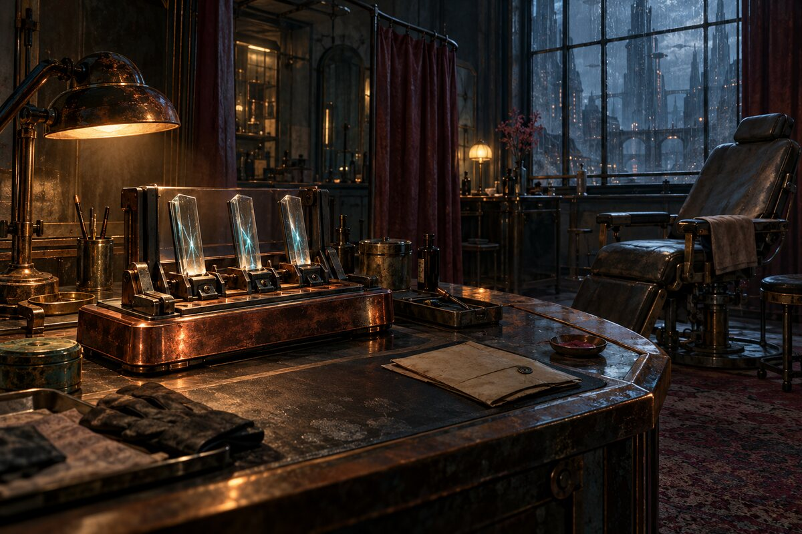
Memory inspection bench with three glass slivers, empty padded chair and clinic task light; no disclosed evidence.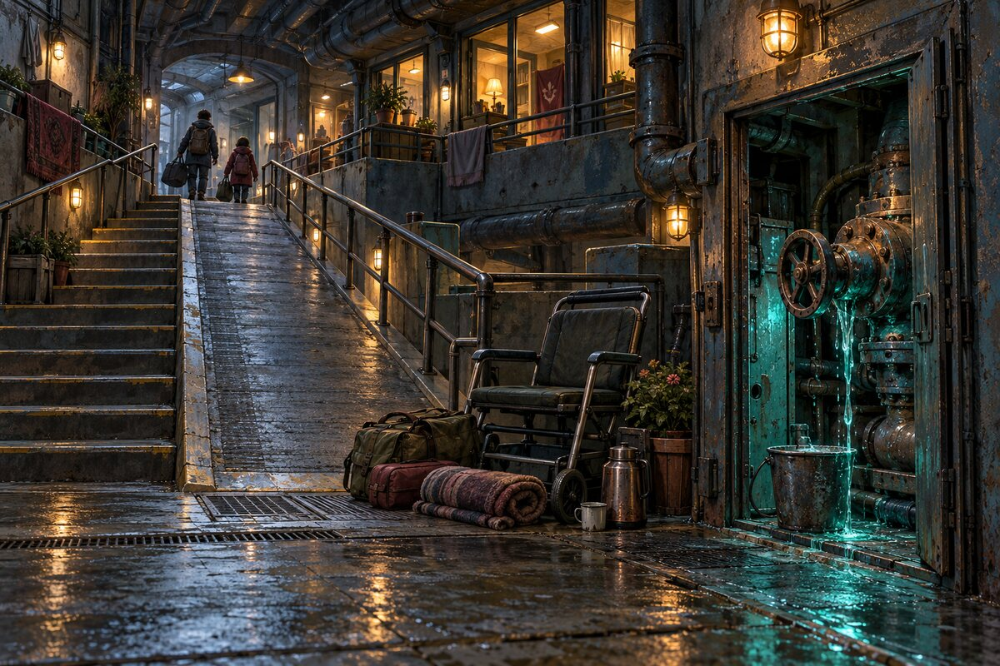
Shelter leak before resolution; accessible ramp, bucket, valve, blankets and a parked transport chair.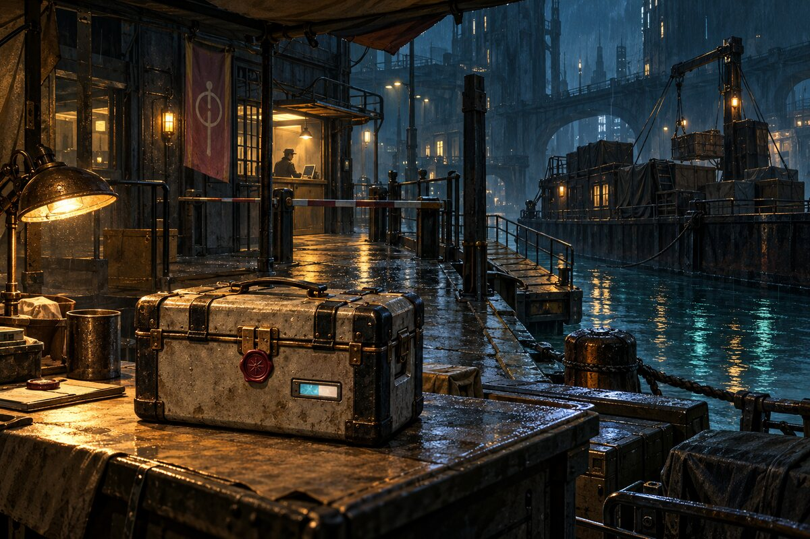
Protected sealed diagnostic parcel at the canal dispatch table before delivery is confirmed.Helion service counter: neutral shifts, closed folio and sleeved receiver; no handover or closure claimed.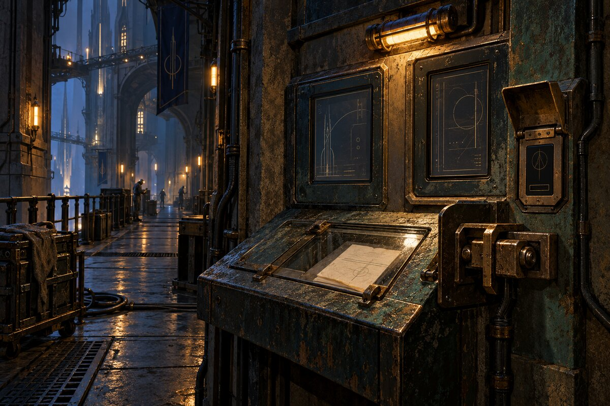
Spire maintenance alcove: waiting terminal, paper request, service latch and badge reader; no outcome indicators.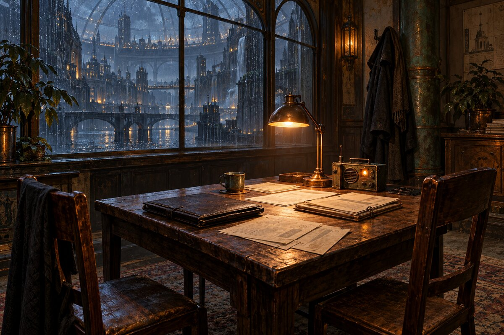
Later Ward Nine payroll table: closed folio, neutral papers and reply relay; no payment or refund claimed.Character portraits
NiaEddaAsa
Source details: art provenance · audio provenance.
Memory source close-ups
Illustrative only. The written evidence supplies identities, times and source limits.
fragment signaturefragment order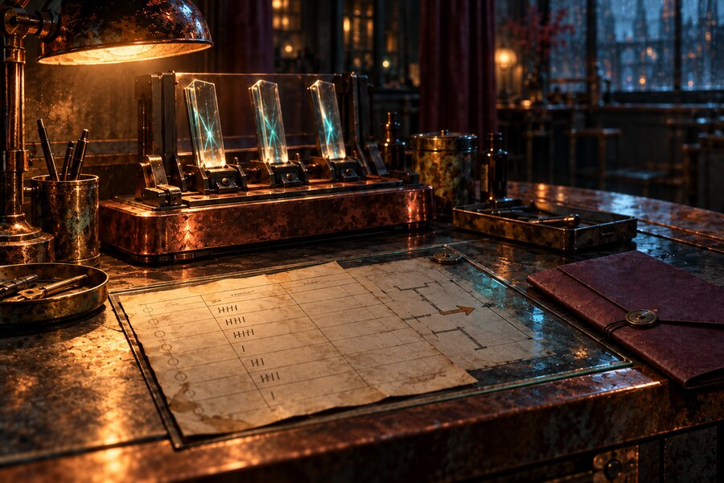
fragment rostermara questioninglumen challengingBench interaction cues
memory-place
memory-reset
memory-mismatch
memory-correction
memory-align
Selected dialogue · synthetic voices
Kokoro v1.0 stock voice styles; fixed authored quotations, no actor session. Independent listening and performance direction remain pending.
Mara · memory_assurance
A green light on the dispatch channel. It meant the evacuation crew had been assigned. I let it mean they'd finished.
Mara · memory_channel
Dispatch spoke through a shift relay. No face. I knew the channel had authority to assign crews; I didn't know who was on it.
Mara · memory_sequence_result
Now ask what your sentence claims. The hour can't answer every question you put to it.
Sister Lumen · memory_publication
People will repeat the sentence before they inspect the source. You can say what the receipt contains and what still needs checking. Or you can name the tower now and accept what happens when it challenges your proof.
Voice provenance and attribution
Canal dispatch alcove
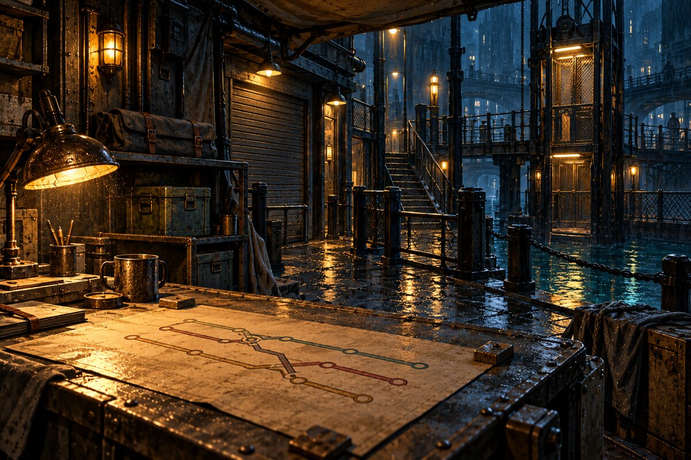
Route planning and held-case recovery · written rules carry costs and recipient registration.Current character conversations
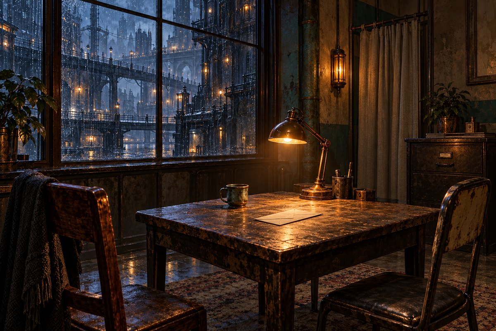
Mara
I want a morning that doesn't begin with someone else choosing what I remember. That won't give the night shift their morning back.
Sister Lumen
Because somebody should know which cup they take their tea in. Even when the city has made a case file out of them.
Phase 4 directed cast and turning points
Five conduct-selected expressions and seven scene plates. Neutral remains valid for unresolved states. These are internally reviewed generated candidates; independent artistic and rights acceptance remain pending. See the continuity, shot and performance brief.
mara-boundary · Mara's attentive firm boundary; preserves dark tied hair, cyan portrait halo and coat.lumen-guarded · Guarded assessing Lumen with original bald head, left magenta optic and white collar.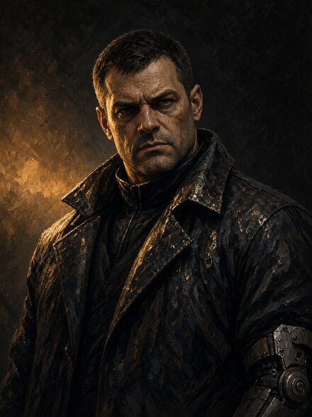
kerr-closed · Kerr's closed disappointed gaze preserves short hair, broad silhouette, repaired coat and arm.quill-waiting · Patient skeptical Quill retains lined face, grey hair, amber eyes and stall steam.sera-listening · Attentive Sera with original hood and pencil, no victory or absolution.quill-offer · Quill waiting beside untouched bowl, amber counter and rainy walkway; no accepted offer or advance shown.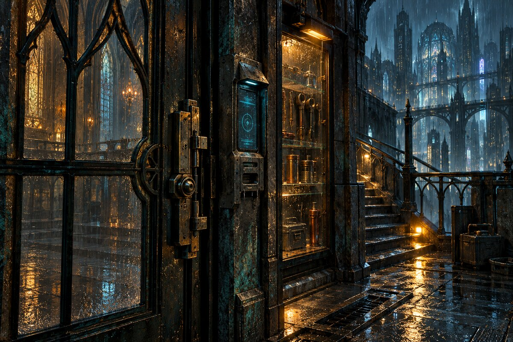
chapel-reader · Empty maintenance reader, ambiguous latch, tools behind glass and wet stair before entry.mara-revelation · Recorded Mara beside cyan memory apparatus; no present-day permission or authentication.finale-names · Sera writing anonymous marks on rain-worn memorial, no displayed private identities.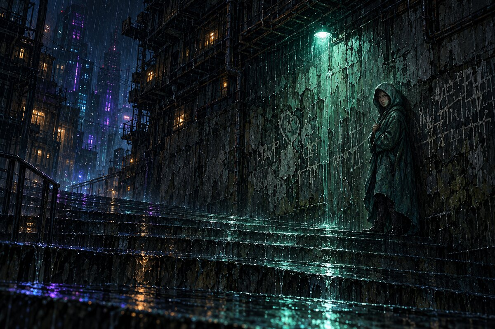
finale-quiet · Empty rainy memorial stair with Sera aside and pencil still.finale-witness · Sera listening beside wall and plain notebook; no absolution or inquiry finding.finale-listed · Ives closing folio at memorial while Sera keeps her pencil; no justice or payment.Phase 4 audio · default-mix audition
First: eight seconds each of reading, quiet and saved-window pressure. Then: Quill, Mara, Kerr, Lumen and the four finale candidates, with music and ambience ducked at the default mix. Synthetic stock voices, no actor session. Review intelligibility, pronunciation, masking, transitions and fatigue on headphones, speakers and a phone; independent acceptance is pending.
Download the mixed audition · Exact audition sequence and gain settings
The Space Around an Answer
Recorded testimony: sparse glass and low suspended harmony, with long spaces for reading. 64-second mono loop, 22050 Hz.
A Cup Left Warm
Quiet conversations and the rain finale: warm low tones and an incomplete memory motif. 64-second mono loop, 22050 Hz.
Three Opportunities
An active local Chapel window: restrained low pulse; no real-time deadline is imposed. 64-second mono loop, 22050 Hz.
Beneath the Awning
Sheltered drops, distant wheel resonance and a low ventilation tone. 64-second mono loop, 22050 Hz.
The Reader Room
Ventilation, intermittent glass resonance and distant pipe drops. 64-second mono loop, 22050 Hz.
Above the Service Counter
A low maintenance motor and occasional soft relay clicks, without success indicators. 64-second mono loop, 22050 Hz.
The Dry Dispatch
A slow pump, hollow metallic drops and restrained water resonance. 64-second mono loop, 22050 Hz.
Under the Memorial Stair
Rain runoff and sheltered concrete drips, with no crowd or invented witness voices. 64-second mono loop, 22050 Hz.
Quill · stall
Mara Voss, Helion logistics. Glass Chapel edits her memory at dawn. Bring me the original hour, intact.
Mara · memo
I signed the coolant dump. Ward Nine. Three hundred on the night shift. I want that sentence to stay in my mouth.
Kerr · act3_kerr_collection_response
You can't unwrite the depot. You can stop asking me to pretend you kept the private part. Tell me what you'll put beside that promise.
Sister Lumen · act3_lumen_boundary
You may leave a private message at the desk. I decide whether to answer. That's all the permission I'm giving.
Sera · ending_names
The wall has room for a voice. It has never had room for an excuse.
Sera · ending_quiet
I have the pencil. The rain can wait with me.
Sera · ending_witness
Leave that beside what you know. Don't make it a clean story for me.
Ives · ending_listed
Your name is still on file. That is what the tower will keep.
Audio craft cycle — 11 October 2026
Twenty fixed synthetic quotations now cover Nia, Mara’s current request and refusal, and Kerr’s three actual handover terms. Three existing quotations have explicit phrase spacing. Use the labeled comparison for audition; source and signal review does not claim perceptual listening acceptance.
- 0.0s · voice-quill-offer / previous delivery
- 9.3s · voice-quill-offer / phrase delivery
- 19.3s · voice-mara-revelation / previous delivery
- 27.3s · voice-mara-revelation / phrase delivery
- 36.8s · voice-kerr-boundary / previous delivery
- 45.3s · voice-kerr-boundary / phrase delivery
- 54.5s · clinic / room excerpt at default ambience bus
- 63.5s · witness / room excerpt at default ambience bus
- 72.5s · stall / room excerpt at default ambience bus
- 81.5s · voice-nia-arrival / default ducked scene mix
- 91.8s · voice-mara-response / default ducked scene mix
- 101.0s · voice-mara-public-refusal / default ducked scene mix
- 109.9s · voice-kerr-handover-private / default ducked scene mix
- 114.4s · voice-kerr-handover-breached / default ducked scene mix
- 122.2s · voice-kerr-handover-registered / default ducked scene mix
voice-quill-offer · previous / current
voice-mara-revelation · previous / current
voice-kerr-boundary · previous / current
Nia Pell · voice-nia-arrival
Now I want to hear the words before anyone uses them. No address. No photograph. If I stop, you stop.
Mara · voice-mara-response
I want to answer in my own name. A private statement to the Ward Nine records desk. I won't make the clinic my alibi.
Mara · voice-mara-public-refusal
Not the board. Not this week. I will answer the desk in my own name. I won't give you a crowd because you asked for one.
Kerr · voice-kerr-handover-private
No recipient entry. That was the part I asked you to keep.
Kerr · voice-kerr-handover-breached
You brought the case. You also put my name in their register after promising not to. Those aren't the same line.
Kerr · voice-kerr-handover-registered
We agreed they could register it. Leave that on the receipt.
A Chair Beside the Window
Soft filtered ventilation and restrained outside water; no treatment machine or consent signal. Full 64-second loop.
Before the Words
Sheltered broadband rain and low room air; no recorder, crowd or witness location implied. Full 64-second loop.
Behind the Counter
Closer awning rain and diffuse low counter-room hum; no transaction-success cue. Full 64-second loop.
Character presence · clinic window, 12 October 2026
AI-generated candidate using the existing Mara clinic image as a visual identity reference. Empty visitor chair and ordinary cup; no papers, recorder, treatment or inquiry outcome. Inspect the invitation and shared-hour views at phone/desktop sizes, and compare presence with actual dispatch status.
Ward Four · a chair beside the rainExisting theme-quiet and ambience-clinic accompany both scenes. No fixed voice quote is added; readable dialogue and silent/text-only delivery retain the full choices.
Personal performances and room mixing · 12 October 2026
Stock synthetic candidates using the established voices. Exact authored quotations; no actor commission or individual voice clone. Compare phrasing separately from mix and room changes. This preview approximates settled default buses; runtime attack/release and cancellation require browser review.
Twelve labeled intervals and source/signal metrics: comparison manifest. Lumen has previous/revised delivery; the new Mara and Kerr quotations use the same new clip for paired mixes because no prior spoken delivery existed.
Sister Lumen · voice-lumen-staying
Because somebody should know which cup they take their tea in. Even when the city has made a case file out of them.
Mara · voice-mara-company
Will you sit for a while? There's nothing to take down.
Kerr · voice-kerr-personal
One walk without counting the steps first. Not another door to stand in. Just the table where the rain doesn't land in the soup.
Music duck 0.28; room duck 0.55, relative to each saved bus level. Kerr uses closer stall ambience. Retain the suitable Mara-window illustration and neutral Lumen/Kerr portraits; no new scene or visual outcome. Source/signal and playback evidence does not establish perceptual comfort, emotional impact or physical-device acceptance.
Starting-page music — Under the Awning
Project-owner supplied MP3. The stereo FLAC delivery is lowered by 12 dB and overlaps the final four seconds with the opening. The game plays the intro once, then repeats from four seconds; this player auditions one pass.
Source and delivery provenance
Unchanged supplied MP3
Automatic dialogue expansion · 45 quotations
All fixed deliveries in inventory order, separated by one second. Established stock synthetic voices; technical audition, with perceptual acceptance pending.
Full interval index
Quill · pay
Fifty now. Two hundred when the shard is in my hand and not wandering around in your bloodstream. Kerr is her shadow. Kerr is why the number is not prettier.
Quill · pay_yes
Ninety. I will not go higher unless you are secretly three people. Two hundred on delivery, and if you die I am billing the corpse for my time.
Quill · pay_no
Cute. Fifty. Count it if you want. The count will not change, and neither will my face.
Quill · route
Three ways in. The front sells forgiveness to anyone with an appointment. The hatch behind the incinerator is for people who still sweat. The choir door runs on an old Helion pad. I would not kiss it.
Sister Lumen · lumen
You are not on the penitent list. Dawn puts Mara Voss in that chair so Helion can edit a crime out of her. The next sentence should be one you can survive.
Mara · mara_why
Helion told me the dump was a flush, not a kill. I signed because the night shift was already in the building and I thought the tower would move them. They did not move them.
Kerr · kerr
That glass is Mara's hour. Helion pays me so the Ward Nine memo stays in her head, not in your pocket.
Mara · memory_cross_exam
Ask me while I'm still here. They bought the hour so I wouldn't have to answer twice.
Quill · job_owner
Her life. Her appointment. Helion booked the chair; I booked you.
Quill · act2_origin_dustline
Get it there. Asa will leave you a clearance for one passenger.
Sera · act2_origin_gutterwire
No speeches. Put your shoulder here. Someone has to sleep upstairs tonight.
Edda · act2_origin_spire (Ives remains the primary portrait)
They still bill my shifts against it. Get it out clean and take the receiver.
Ives · act2_archive_door
If you allege an instruction, identify its issuer. We will challenge anything less.
Sister Lumen · act2_notice_brief
They do not need to tell every landlord where they sleep. Dispatch wants a route it can verify. I need a notice people can actually use.
Sister Lumen · act2_notice_receipt
Come back when the window has passed. A plan deserves an answer, even if it was a good plan.
Kerr · act2_kerr
Helion paid me to know the weight of that glass. You are the part of the weight I can still invoice.
Sister Lumen · act2_lumen
The shard is a week old, wherever it went. I called you back because memory gets thin if nobody walks it back to the wall. Come with me, or tell me you are done and mean it.
Nia Pell · act2_witness_brief
You promised a witness. I promised nothing to a transmitter. I need care, a room they don't own, and a say in which words leave it. Can you do those separately?
Kerr · act2_witness_checkpoint
I can keep this off the register if you give me a clinic transfer I can sign. Get the desk to accept it. Then move.
Sister Lumen · act2_witness_lost
We cannot tell her the room is private. Say exactly what happened.
Sister Lumen · act2_witness_repair
We can move her again. It won't erase the first register entry. Say that to her before you call this repaired.
Nia Pell · act3_nia_contact
If you have another question, leave it with the clinic. I decide whether to answer. Or let this be the last question for a while. I can choose that even if you helped me.
Sister Lumen · ending_burned
Next time you are dying, come here first. We owe you a cheaper kind of edit.
Character reactions and hearing voices
Eighteen fixed stock synthetic quotations; established cast identities. Each paragraph remains available in silent play.
Mara · act3_mara_followup
Quiet recognition; distinguish company from the delivered envelope.
You paid someone to carry the paper so you could sit here. I remember the chair, too.
Mara · act3_mara_followup
An unpressured boundary; no accusation for declining.
I kept the hour for myself. You don't owe me company because you heard what I did.
Mara · act3_mara_followup
Admit disappointment without withdrawing ownership of her time.
I did this after you left. You took the envelope; I kept the hour. I wanted you here, too. Both things can be true.
Mara · act3_mara_followup
Matter-of-fact delay followed by remembered company.
The envelope went in the next batch. That hour didn't need a receipt to have happened.
Mara · act3_mara_followup
Warmth and unfinished work coexist; do not imply dispatch.
The envelope is still here. I'm glad you sat with me. I still need to send it.
Kerr · act3_kerr_collection
Understated acknowledgement, not a reward or treatment claim.
That was the part I asked you to keep.
Kerr · act3_kerr_collection
Firm, restrained disappointment; retain the recorded breach.
You wrote my name after promising not to. Don't call this private.
Edda · act2_archive_brief
Practical instruction, then the personal employment cost.
Your export records a cancellation. My ledger can show whether it reached the shift. Compare them. I have to work here tomorrow.
Edda · act2_archive_custody
Clear permission boundary; no implied authorization.
Ask before you put my name on a public copy.
Edda · act3_edda_terms
Businesslike private permission; distinguish work from publication.
I'll sign for payroll to use my name here. Not on your public packet. Leave the witness recording and patient list out. I need a shift, not another version of the accusation.
Sera · act3_testimony_review
Patient distinction between memorial and public evidence.
The names can be spoken either way. This is a different promise: an account someone can question after you leave.
Sera · act3_testimony_correction
Direct correction without humiliation or erased consequences.
Correct it here. A correction belongs beside what people already heard.
Sera · act3_arrival
Open invitation with the old transaction still acknowledged.
say them. If you sold them, you can still say them. The wall does not check your receipt.
Ives · act3_testimony_hearing
Controlled institutional challenge; sharpen the final question.
A maintenance signature isn't an issuing key. A witness isn't a server. What exactly are you asking people to believe?
Nia Pell · act3_testimony_nia
Deliberate ownership of each limit, not frightened gratitude.
Use the words I approved. You can name me as the source through Sera. No address, no new story about how brave I was, and no sentence saying the room made me owe you this.
Sister Lumen · act3_notice_result
Measured practical care, no invented clinic outcome.
This buys a way to answer them. I will not mark it as three new appointments.
Sister Lumen · act3_notice_result
Calm acknowledgement of consequences that persist.
The observer saw the old time. Taking down the paper cannot take that back.
Sera · act3_shelter_visit
Ordinary shared work; light invitation after the loss.
The clothes are what they have left. Help me get them clean?
Asa and neighborhood voices
Twelve fixed stock synthetic quotations; Asa gains a distinct stock af_alloy voice. Each paragraph remains available in silent play.
Asa · act2_freight_brief
Practical instructions, then a firm route limit.
Keep it cold. Get a receipt. No patient names. If the service route stays private, I can spare one passenger clearance. Register the handover and that route retires.
Asa · act2_freight_recovery
Steady after a setback; finish the work without denying exposure.
We can finish the delivery. We can’t pretend they didn’t see us.
Asa · act2_freight_result
Modest earned promise, with curiosity rather than ceremony.
One crossing. Tell me when the week is over what it was for.
Asa · act2_freight_result
Honest limits, no blame or invented receipt.
I can answer for what we saw. I can’t sign for the part we didn’t.
Asa · act3_freight_visit
Quiet acknowledgement of the actual private delivery.
The parcel got there, privately. One crossing was what I owed you.
Asa · act3_freight_visit
Separate completed delivery from a permanently exposed route.
The parcel got there. The route is still exposed and retired.
Asa · act3_freight_visit
Relief at the answer without rewriting its timing.
The batch book finally answered. Received after you left. That doesn't buy back our passenger route.
Asa · act3_freight_reflection
Ordinary attention to the people at the other end of the job.
And remember that the people receiving your work have names too.
Asa · act3_freight_reflection
Offer a small personal question without promising escape.
Choose who you ask to hold the door.
Asa · act3_freight_reflection
Understand paid work while keeping its human cost visible.
Just keep the receipt honest about whose morning it bought.
Nia Pell · act3_witness_visit
Clear personal agency; gratitude supplies no new permission.
The room is mine to name. That matters more than what you called the job.
Ives · act2_helion
Dry institutional confidence; the file outlasts the badge.
We kept the name. Burning the badge was a hobby.
Conversation settings
Four original generated plates preserve the written outcomes.
Ward Nine hearing table — An unfiled table with blank cover sheets and a closed sleeve.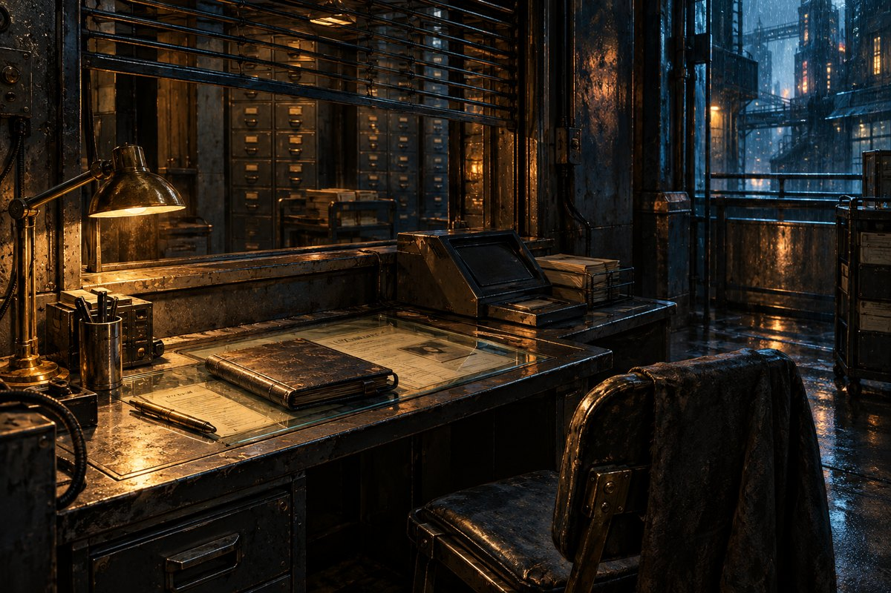
Helion archive desk — A neutral closed ledger, catalog and dark reader.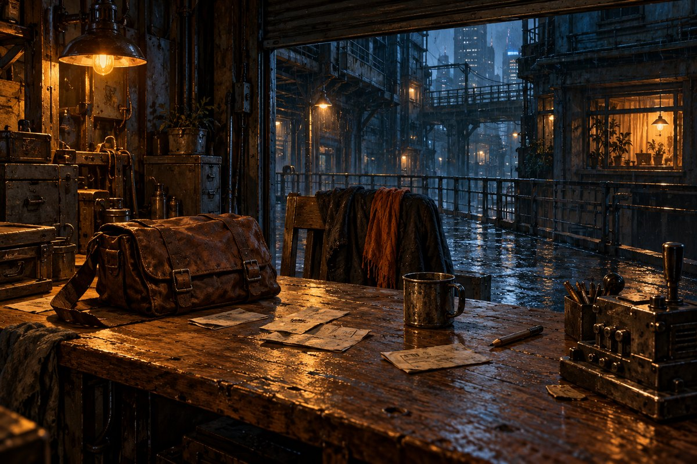
Asa’s courier table — A satchel and routing slips, with no parcel arrival shown.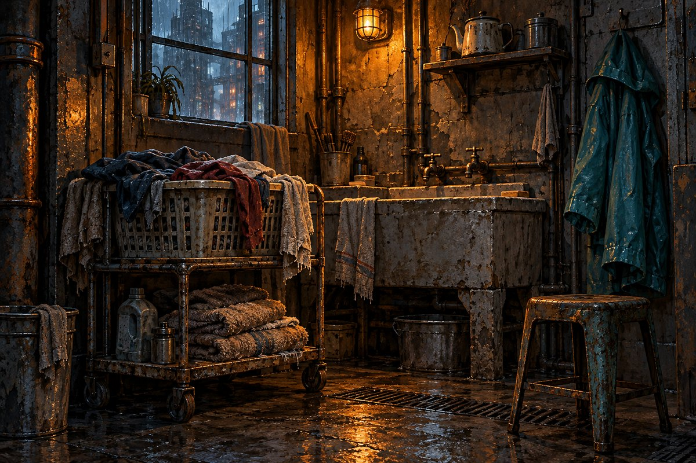
Sera’s laundry visit — Damp clothes await the next ordinary job.
Neighborhood work and witness checkpoint
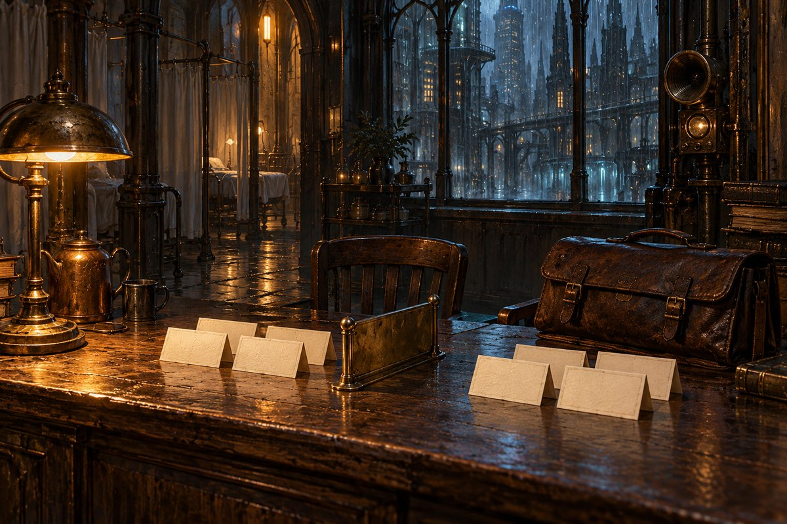
Glass Chapel · the dispatch desk. Neutral dispatch materials establish the room without representing a selected schedule, receipt, attendance or private household information. The loose stationery is illustrative, not a count of committed cards.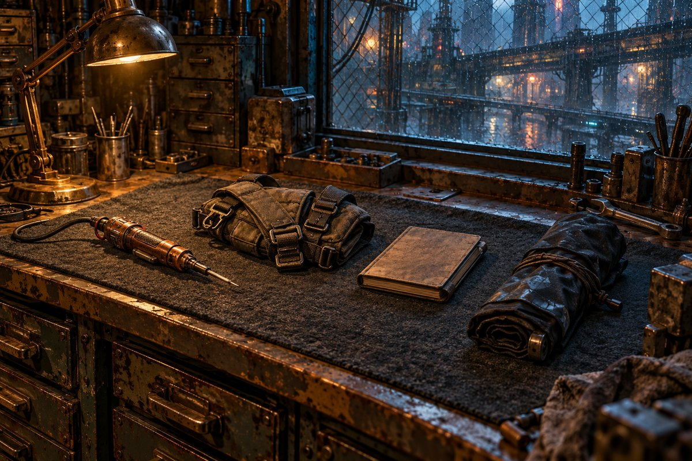
District workshop · one field kit. The four unclaimed tool types communicate the shop choices without depicting purchase, ownership, care or permission.Ward Four · the leaking pump. This plate belongs only to the unresolved pump-method decision; it never accompanies repaired, evacuated or allocated-room outcomes.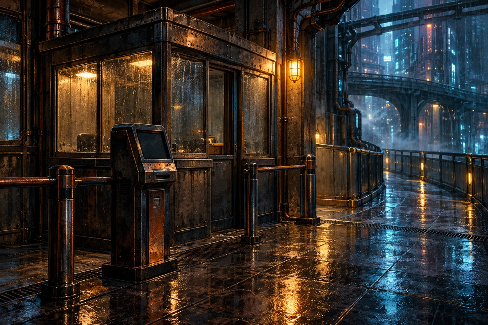
City crossing · the inspection point. The checkpoint setting depicts no witness identity, approved crossing, protected destination or completed transfer; Kerr’s actual portrait remains.Neighborhood work and later replies
Fourteen fixed stock synthetic quotations using the five speakers’ established voice identities. Each paragraph remains available in silent play.
Sister Lumen · act2_notice_capacity
Firm capacity limit, practical rather than scolding.
Carrying six papers isn't six places in the room. The last two would arrive to a full window.
Sister Lumen · act2_notice_privacy_refusal
Clear privacy refusal; measured emphasis on the desk.
No. Give them my desk, not somebody else's front door.
Sister Lumen · act2_notice_counter
Honest limit followed by three workable alternatives.
I won't promise the third. Carry it to the later desk yourself, fund another carrier, or change the split.
Sister Lumen · act3_notice_visit
Remember actual funded work without promising clinic attendance.
That split needed the extra carrier you funded. Keep the work beside the plan.
Sister Lumen · act3_notice_visit
Acknowledge the runner’s actual additional trip.
That split needed your extra later trip. Keep the work beside the plan.
Sister Lumen · act3_notice_visit
Remember the accepted return contact, without erasing a refusal.
That split needed your clinic return bundle. Keep the work beside the plan.
Quill · act2_workshop
Dry equipment advice with ordinary concern for the recipient.
Keep enough for the person on the other end of the job.
Sister Lumen · act2_recovery
Quiet reassurance about an ordinary rest seat.
This one doesn't keep your hour.
Sister Lumen · act2_recovery_after
Give the silence room before returning to unfinished work.
Now decide who needs what you have left,
Sera · act2_shelter_result
Warm practical invitation after any shelter outcome.
Come back when it’s daylight. A place to sleep is the start of a night, not the whole of it.
Edda · act2_spire_receipt
Measured earned handover; the previous invoices remain disputed.
One clean number. One receiver. The old charges are still a fight.
Edda · act2_spire_recovery
Steady recovery, no denial of the logged badge query.
We can close the key. We can’t make that query disappear.
Edda · act2_spire_recovery
Practical alternative to activating the badge reader.
The staffed desk is slower. You don’t need to wake that thing to ask.
Mara · act2_response_receipt
Present-day uncertainty, distinct from her recorded testimony.
Now I wait for an answer I can't write for them.
Private terms, ordinary rest and the memorial
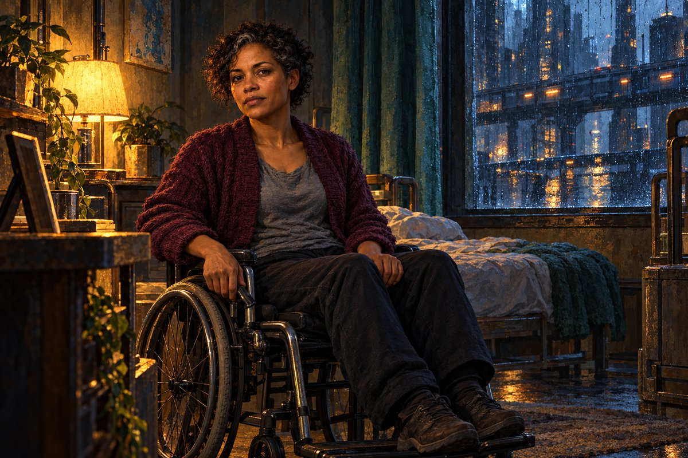
Glass Chapel · Nia sets her own terms. Nia’s pre-transfer agency and established appearance accompany her briefing and work question. No tightened harness, completed move, protected room, recording or new permission is depicted.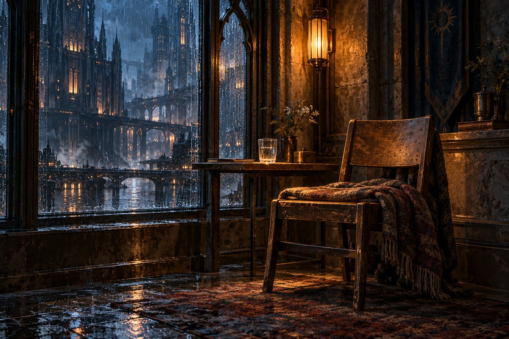
Glass Chapel · an ordinary seat. The available ordinary seat distinguishes optional rest from memory extraction before the player accepts, pays for or declines recovery. No completed care or strain outcome is shown.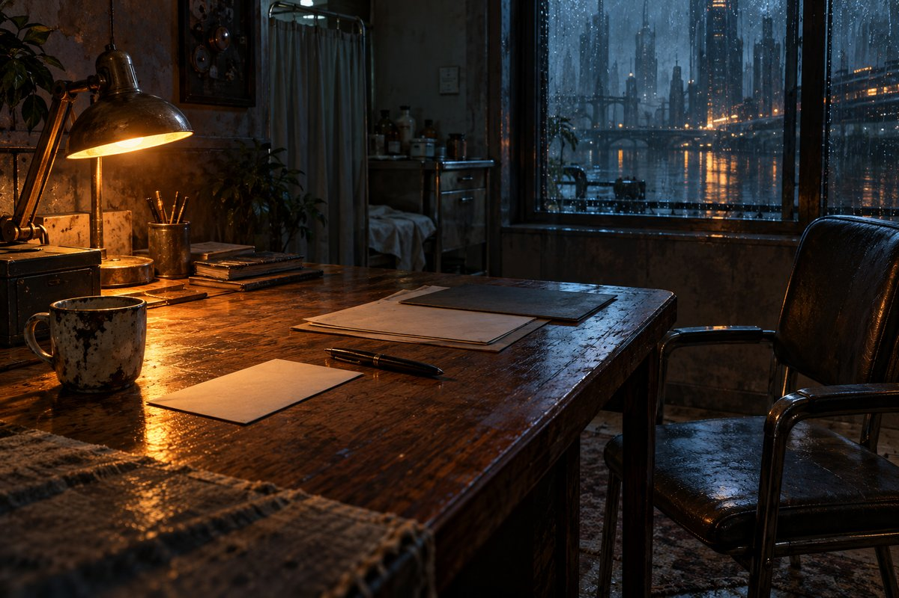
Ward Four · the private reply table. Neutral correspondence materials accompany refusal, private terms and dispatch without depicting a public release, queue intake, inquiry finding or acquittal. The envelope flap and written source details stay out of view.Ward Nine · the weathered names. The populated memorial establishes the wall before an independent finale choice. No readable identity, open witness ledger, address, fresh inscription, completed declaration or absolution is depicted.Private terms and the memorial
Twelve fixed stock synthetic quotations using the four speakers’ established voice identities. Each paragraph remains available in silent play.
Nia Pell · act2_witness_support
A direct question about whose labor the player is promising.
Tell me whose work you're offering.
Nia Pell · act3_witness_visit
Keep the known-room breach separate from retaining her recording.
They know the room. Don't tell the wall I was protected because you still have my words.
Nia Pell · act3_witness_visit
Acknowledge the later quiet room without erasing the first exposure.
The second room is quiet. The first one still gets calls. Both belong in your account.
Kerr · act2_kerr_door
An understated challenge under the same awning.
or you can walk past and let the canal be the argument.
Kerr · act2_kerr_collection_terms
Firm practical collection terms; no invented medical miracle.
I want the case, not a treatment report. Their free courier gate writes the recipient into the shift register. If you promise to keep my name out, don't save your fare by putting it in.
Kerr · act2_pump_methods
Dry humor about the help he can actually offer.
The knee won't hold a wheel. The door I can do.
Kerr · act3_pump_visit
A modest contribution that does not settle past conduct.
You told me the names. This time I kept a door open. That doesn't settle the rest of my week.
Mara · act2_response_terms
Calmly distinguish entering a response from being absolved.
An answer is not an acquittal,
Mara · act3_response_visit
The desk received the response; its inquiry remains unanswered.
That was what I wanted my name there for.
Mara · act3_response_visit
Ordinary agency after the player declined before promising.
I'll find another way to send it.
Mara · act3_response_visit
Leave unfinished dispatch honestly unfinished.
Don't put an answer where the waiting is.
Sera · ward_wall
A patient invitation to inspect or explain, without demanding a finale.
The third row needs your eye, or help from the wards. You can try. You can also tell me why you came.
Complete campaign character dialogue and setting art
190 new stock synthetic character clips; 100 earlier clips remain in the active sequence. The earlier incorrectly cast dispatcher WAV is retained as an archival file. Character dialogue only; no narration or runtime synthesis. Ten neutral setting illustrations establish unresolved and completed returns without depicting a selected outcome.
Ward Four · under the awnings
Steam rises from an unattended copper noodle pot beneath a patched market awning, beside a damp menu and two empty counter seats.
Glass Chapel · the service threshold
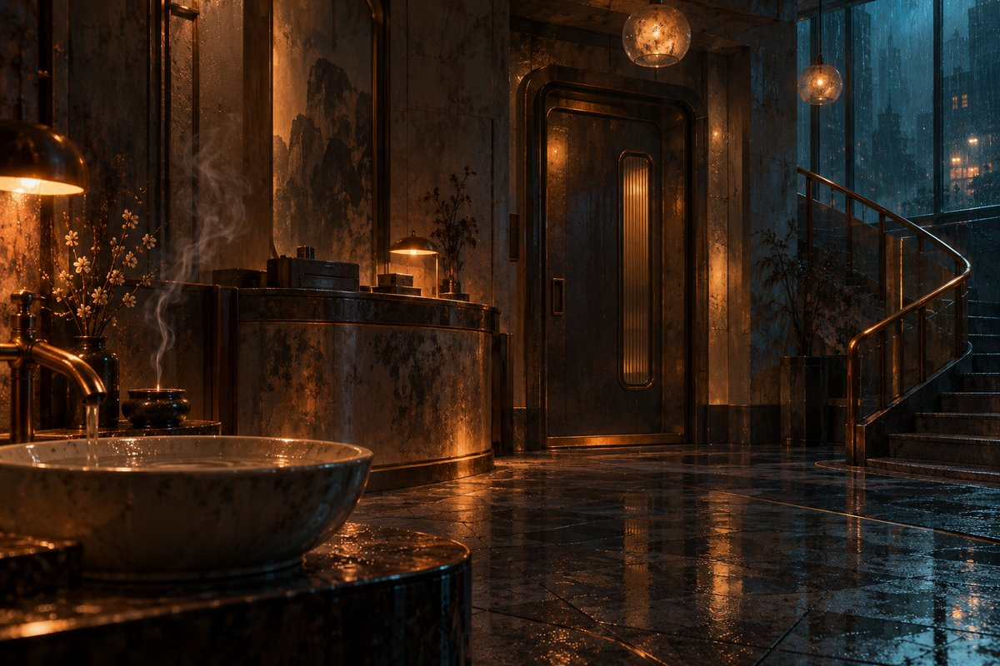
A shallow basin and worn visitor desk stand beside a dim service stair, copper rails and a closed clinic door.
Glass Chapel · behind the clinic walls
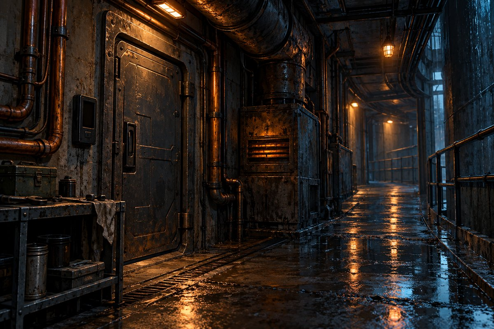
Copper pipes and a dark reader flank a closed service hatch in a narrow maintenance passage.
Glass Chapel · the chair room
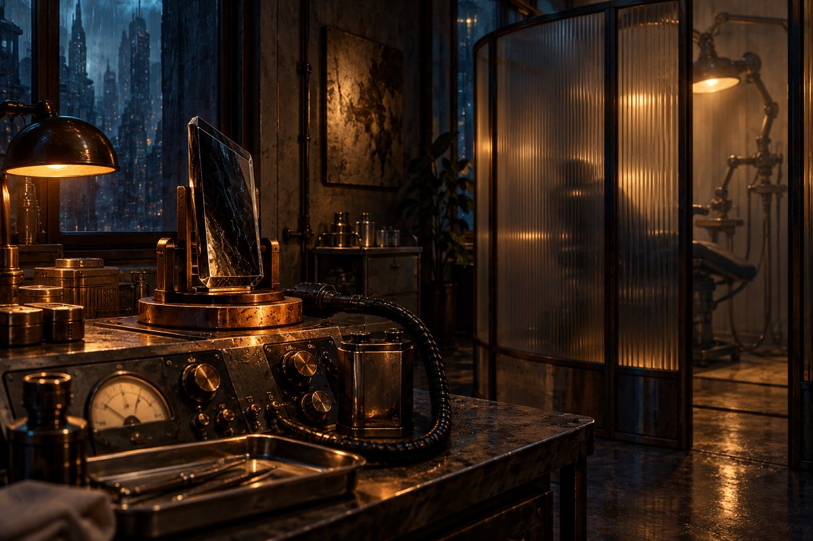
A glass sliver holder and copper memory-reader controls sit beside the edge of a screened medical apparatus.
Ward Nine · the coolant service room
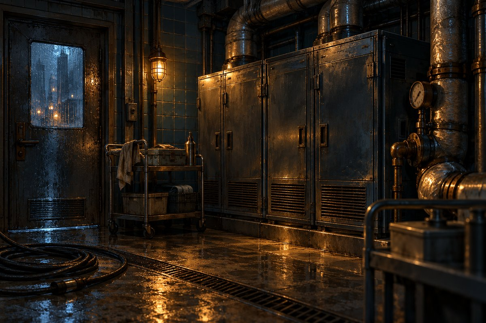
Closed coolant cabinets, insulated pipes and a portable supply trolley wait beneath a brass service lamp.
Ward Nine · the private clinic relay
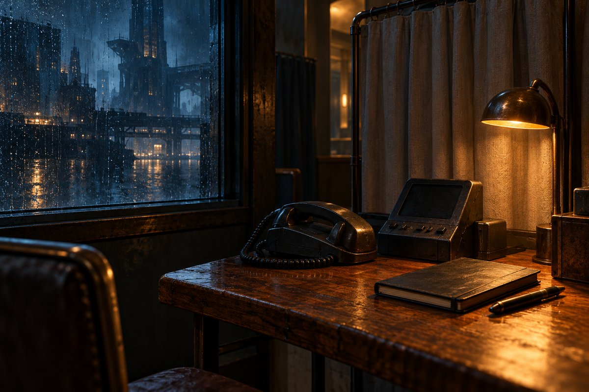
An unmarked handset and closed notebook sit beside a privacy curtain and rain-streaked clinic window.
Ward Four · the district board
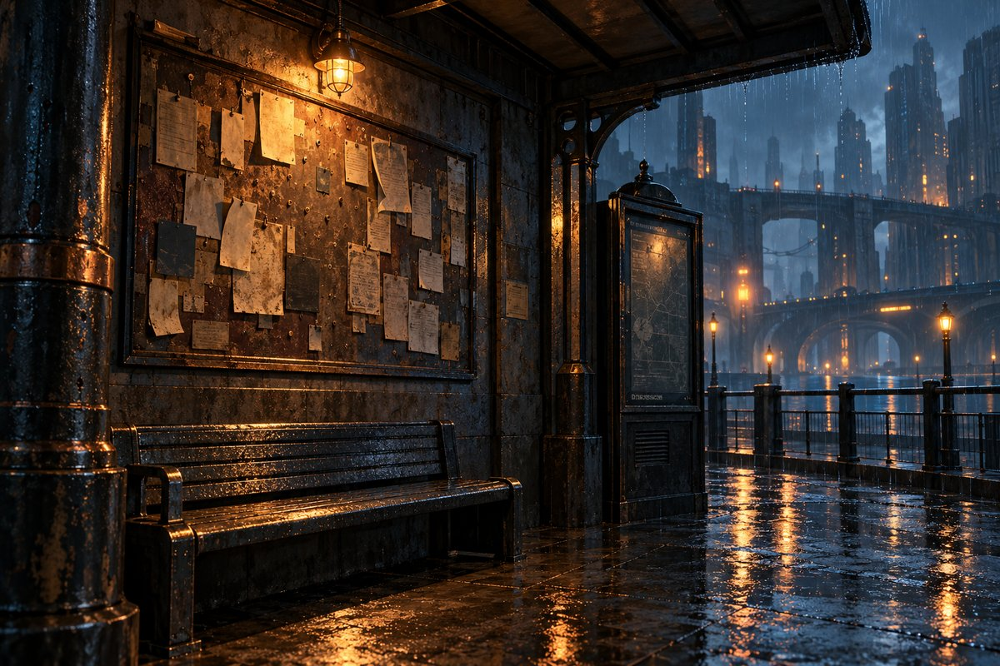
Indistinct notices and blank-backed cards hang under a sheltered district board beside a wet walkway.
Canal district · the service passage
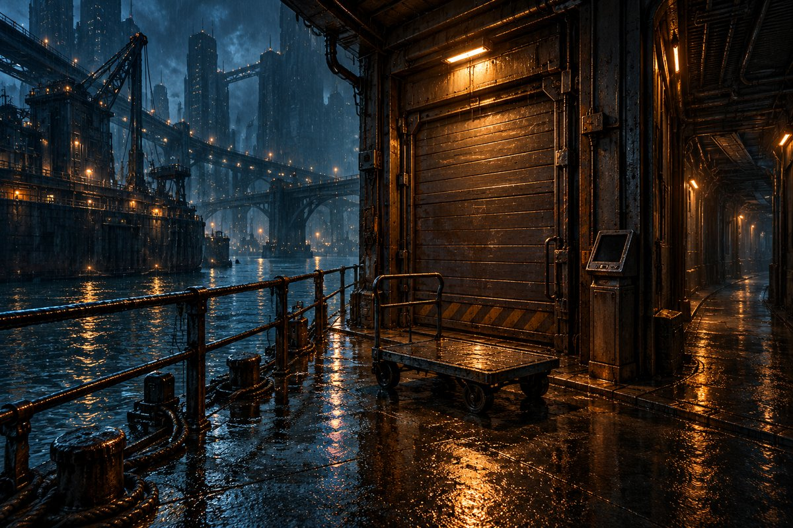
A closed freight hatch, empty handling trolley and shadowed corridor sit beyond wet canal railings.
Ward Four · the shelter stair
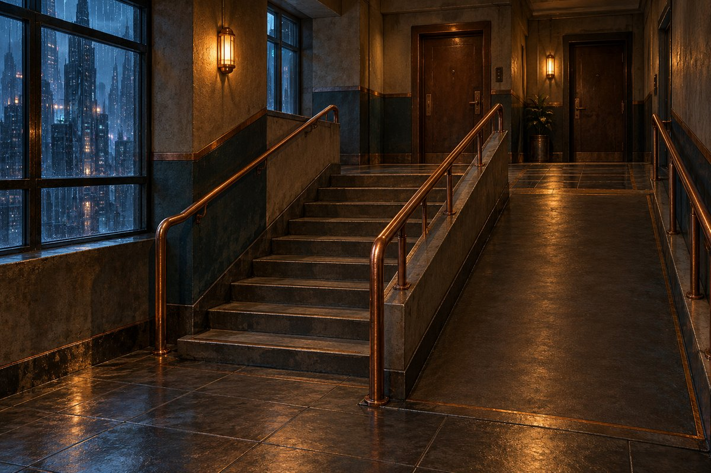
A broad worn ramp and handrail run beside the shelter stair, under a dim lamp and rain-streaked window.
Ward Four · the staffed hall
A plain kettle and stacked folded mattresses wait beside a broad ramp doorway in a communal hall.
Stallholder
Funny thing to sell,
opening_approach
Stallholder
Yesterday.
opening_approach
Stallholder
A regular came in last winter,
opening_neighbor
Stallholder
He'd sold an argument with his wife to make the rent. Remembered getting paid. Didn't remember what he needed to apologize for. Asked me to write it down.
opening_neighbor
Stallholder
I sell dinner. But if someone hires you to carry an hour, ask whose it was before you ask what it pays.
opening_neighbor
Quill
Fifty now, two hundred on delivery. Her bodyguard is Kerr. He is paid to stop you.
stall
Quill
Ninety now. Two hundred for the intact shard. Before dawn. Those are the terms.
stall
Quill
The front desk will ask for one,
route
Quill
The other doors ask different questions.
route
Sister Lumen
Copy it. Then we both leave holding a fire. Do not get clever and die.
vault_quiet
Kerr
Put it down.
kerr
Quill
It goes to a clinic,
act2_origin_dustline
Asa
Diagnostic cartridge. Clinic stock. My manifest can't cross this gate.
act2_freight_brief
Ren
Junie Calder worked beside Ivo Pell,
act2_middle
Ren
Say her if you get to the wall. She was my family before she was your evidence.
act2_middle
Sister Lumen
They need to know where the clinic is,
act2_notice_brief
Dispatcher
I can take that split if you carry the clinic's return bundle to this desk.
act2_notice_offer
Sera
What do we put beside it?
act2_public_response
Mechanic
The file says evacuation was canceled. I still need to know who sent it. Don't rub out the question mark because the wall is waiting.
act3_records_visit
Sera
Ivo stays legible,
ward_wall
Asa
A parcel is somebody's morning,
act3_freight_visit
Asa
What were you trying to carry for yourself?
act3_freight_visit
Asa
Keep your name,
act3_freight_reflection
Sera
If you know any of them,
act3_arrival
Sera
We still have the names.
act3_arrival
Sera
I won't call you back,
ending_quiet
Sera
Six households upstairs. One valve downstairs. We stop the leak or move everyone to the hall.
act2_shelter_brief
Ren
We can walk. My father needs the ramp, not the stairs.
act2_shelter_brief
Ren
We’re here,
act2_shelter_hall
Ren
It’s loud. It’s still somewhere.
act2_shelter_hall
Ren
Dad reached the ramp. We slept, but the hall lights stayed on.
act3_shelter_visit
Quill
Then do not spend your whole advance on my pass,
route
Quill
There are other doors.
route
Mara
I could have waited for the exit count. Waiting would have put my name on the delay. I told myself a crew assignment was enough.
memory_assurance
Mara
Don't put a person in that blank because I was too willing to leave it blank myself.
memory_channel
Edda
I need the old maintenance key out of this terminal,
act2_origin_spire
Kerr
You can tell me what the hour was worth,
act2_kerr_door
Kerr
Week's up,
act2_kerr
Sister Lumen
Help the room before you make it a sentence,
act2_pump_brief
Sister Lumen
If the spare won't start, we move the medicines.
act2_pump_brief
Dispatcher
I won't promise the third. Carry it to the later desk yourself, fund another carrier, or change the split.
act2_notice_counter
Edda
This tells us where to look. It isn't the record. My countersignature isn't the command's issuing key either.
act2_archive_challenge
Edda
Keep the original with Sera,
act2_archive_custody
Sister Lumen
Two reached somebody. The rest have no reply yet. An acknowledgement does not tell me they came to clinic.
act3_notice_visit
Sister Lumen
You asked me to keep the records separate,
act3_notice_visit
Sister Lumen
Keep the reply separate too.
act3_notice_visit
Edda
Keep the original available,
act3_edda_visit
Edda
Let them question the record without making my shifts the story.
act3_edda_visit
Mechanic
Now I can ask two questions instead of repeating one accusation.
act3_records_visit
Quill
Start by choosing how you get in,
route
Asa
A way out still has somebody at the other end,
act3_freight_reflection
Asa
I know what a paid tomorrow means,
act3_freight_reflection
Sister Lumen
You isolated it. The maintenance fault is on their log, even if your name isn't.
act3_chapel_return, lumen
Sister Lumen
I already decided you were a person.
act2_lumen_door
Sister Lumen
Ward Nine is still down there,
act2_lumen
Nia Pell
Don't publish my address and call that courage,
act2_witness_door
Nia Pell
Give me somewhere they don't rent to me. Then I'll tell Sera what I saw.
act2_witness_door
Nia Pell
You got me here,
act2_witness_arrival
Nia Pell
That part stays,
act2_witness_safe
Nia Pell
The address doesn't. If they ask where I am, tell them I am available through you.
act2_witness_safe
Kerr
They have my replacement at the canal depot. Unpowered, no miracle in it.
act2_kerr_collection_terms
Nia Pell
An empty address field. Keep it that way when you tell the story.
act3_witness_visit
Kerr
The terms arrive with the case.
act3_kerr_collection
Sera
She agreed to record it. That wasn't permission for every public use.
act3_testimony_consent
Sera
One at a time,
ending_names
Kerr
You left them somewhere to send it back. Good. A private name shouldn't make a lost case somebody else's problem.
act2_route_receipt, act3_kerr_collection
Kerr
No recipient entry,
act3_kerr_collection
Sister Lumen
The orderly accepted a shift, not a confession. You still owe the work you offered.
act3_chapel_return, lumen
Kerr
Shard on the plinth. You on the floor.
kerr
Kerr
That glass is an hour Helion paid to keep. We can skip to the end.
kerr
Kerr
My case. Your terms with the depot. Keep both names on the right paper.
act2_route_receipt, act3_kerr_collection
Sister Lumen
You waited for their return pass. That left no new visitor entry.
act3_chapel_return, lumen
Nia Pell
I chose to wait with you. Quiet doesn't mean I agreed to a recording.
act3_witness_visit
Kerr
You let it go without you. Most runners hear an empty corridor and stop listening.
act2_route_receipt, act3_kerr_collection
Sister Lumen
You held it open with your hands. Maintenance will notice that.
act3_chapel_return, lumen
Nia Pell
You stopped when I asked. Remember that, not just the weight you carried.
act3_witness_visit
Kerr
You carried the weight where it was. Not where the handle told you it ought to be.
act2_route_receipt, act3_kerr_collection
Ives
The folio is closed,
ending_listed
Quill
Fifty now. Two hundred for the intact shard. Before dawn. Those are the terms.
stall
Kerr
This isn't another collection from you.
act2_kerr_collection_terms
Sister Lumen
We can still keep her account,
act2_witness_lost
Kerr
Tell the wall you left it open. I don't need a finished job invented on the way down.
act3_kerr_collection
Sera
You tested this sentence: The exported command receipt independently authenticates Helion as its issuer. What should we do with the verdict you kept?
act2_public_response
Sera
You came late,
ending_witness
Asa
I haven't seen a stock receipt for your case. That part is still open.
act3_freight_visit
Asa
No matching entry at this desk. Someone else may have carried it. I can't give you a receipt for that.
act3_freight_visit
Asa
You left it at intake. I brought the batch reference; we can ask before calling it delivered.
act3_freight_visit
Quill
One case in this shipment for you,
act2_workshop
Nia Pell
You kept your shift. Don't turn that into something I owe you.
act3_witness_visit
Kerr
You paid with your back. Keep the receipt for that, too.
act2_route_receipt, act3_kerr_collection
Sister Lumen
A door is a small thing until someone has to answer for it.
act3_chapel_return
Sister Lumen
Sit a minute. The next person through that door will need their own answer.
act3_chapel_return
Kerr
You said no before I counted on it. I can work with a no.
act3_kerr_collection
Quill
I know who works the depot counter.
act2_quill_introduction
Quill
You used the introduction to get a counter answer. That's what I lent you.
act3_quill_introduction
Quill
An introduction asks somebody else to believe my word about yours. Clear the forty first, or use the map without me.
act2_quill_introduction
Quill
Paid now. Late then. Both fit on the page.
act2_quill_introduction
Quill
I took the money. I haven't lost the calendar.
act3_quill_introduction
Kerr
The register was part of our agreement,
act3_kerr_collection
Kerr
Leave it on the receipt.
act3_kerr_collection
Sister Lumen
And I won't sign as your sponsor. We can still sit at the same table.
act2_response_invitation
Mara
There is a chip in this cup. They always turn it away from me. I want to decide which way it faces.
act2_mara_company
Mara
That way,
act2_mara_company_kept
Mara
Tomorrow I might turn it back.
act2_mara_company_kept
Mara
They can ask me now,
act3_response_visit
Mara
I signed the old order. This page doesn't take my hand off it.
act3_mara_followup
Sister Lumen
We gave the conversation a room. We didn't give it our name.
act3_lumen_boundary
Mara
It hasn't reached the desk,
act3_response_visit
Quill
Mara's,
job_owner
Quill
Someone who pays for an original. You want Mara's reasons, ask Mara. I sell the route to the room, not an honest answer.
job_owner
Edda
The obsolete key bills me after I clock out. Close that number, not my current account.
act2_spire_brief
Edda
A clean receipt and this is yours. Wake their badge reader and it stays here.
act2_spire_brief
Edda
Read all three. The terminal is happy to close the wrong thing.
act2_spire_sources
Edda
One attempt. If it rejects you, we go to the desk. Your old badge will be in its log.
act2_spire_methods
Edda
Come back when payroll answers. They don’t always send the same answer to the person who asked.
act2_spire_result
Edda
The key and the inquiry are different jobs. We can ask about temporary work separately.
act3_spire_visit
Edda
A review isn't a dismissal. If you can bridge the suspended shift, do. Keep the original available either way.
act3_edda_visit
Edda
One shift. Keep both papers. Don't make the first one an acquittal.
act3_edda_reply
Kerr
You sorted somebody else's shelves for this. That's your time, not a favor I signed for.
act2_route_receipt, act3_kerr_collection
Sera
You agreed to pause questions. A hearing isn't an exception.
act3_testimony_consent
Sister Lumen
Try another channel, not the same answer louder,
act2_notice_recovery
Sister Lumen
A tower observer stood at the stop during the window. Three people asked for a different time. I know those calls happened; I do not know who stayed home.
act3_notice_visit
Edda
They can find my shift from this. Taking my name off the public copy won't hide it from my employer.
act2_archive_custody
Sister Lumen
A chair and a lamp are what I offered. You don't get to turn them into a signature.
act2_response_refusal
Sister Lumen
The clinic stayed out of the endorsement. Keep the refusal with the rest.
act3_lumen_boundary
Mara
You didn't promise me a receipt,
act3_response_visit
Mara
No board, and no dispatch yet. Leave both lines there.
act3_mara_followup
Mara
Private meant private. I'm glad that sentence survived the journey.
act3_mara_followup
Ren
We can use the hall annex if it has mattresses and Dad can use the ramp,
act2_shelter_rooms
Sera
You didn't see where they slept. Don't make that a story of abandonment.
act3_shelter_visit
Ren
We slept upstairs. The floor was dry. Everything we packed still smells of coolant.
act3_shelter_visit
Edda
Tell Sera what arrived. Leave room for what hasn't.
act3_edda_reply
Edda
You didn't take this on. I haven't brought you a closure receipt.
act3_spire_visit
Edda
They accepted the request. They haven't closed the key. Will you sit while I ask payroll?
act3_spire_visit
Edda
That part didn't go away.
act3_spire_visit
Edda
Late is still useful,
act3_spire_reply
Edda
Don’t date it last week.
act3_spire_reply
Edda
They have your badge. I’m not adding this serial number to the same trail.
act2_spire_receipt
Sister Lumen
The service window closed. Their eyes didn't.
act3_chapel_return, lumen
Quill
Because Kerr knows my face from a year I would rather sell than tell. Mara's bodyguard. Helion pays him to keep her hour in the chair room. He does not know your face yet.
why
Quill
A quiet door gives you time. A loud one brings him. If he finds you, getting out matters more than getting paid.
why
Quill
Ninety now. Two hundred when I can hold the shard up to a light and see a whole hour in it. We are done negotiating.
pay
Orderly
Penitent? Appointment chip. Hands where the basin can see them. If you are here to sell us organs, we already have a guy.
front
Orderly
Pass still scans,
districts
Sister Lumen
Then work.
lumen_cold
Sister Lumen
Try not to bleed on the penitent tile. We just had it blessed.
lumen_cold
Quill
Keep the advance,
ending_walk
Quill
Lose my name for a while.
ending_walk
Edda
No wage receipt today,
act3_spire_visit
Edda
Just what payroll did with the number.
act3_spire_visit
Quill
Fifty. You already asked. I already didn't. The rain is free if you want a longer conversation.
pay
Sister Lumen
Kerr likes liars. The chair room is up the stair. So is he, in a moment.
lumen_cold
Mara
That is mine. I signed it. Don't make the tower's next decision erase the one I made.
memory_challenge
Ives
Helion can pay forty for a week of quiet,
act2_folio
Ives
Or you can try to close this in the street, where we are already writing.
act2_folio
Kerr
I did my job,
act2_kerr
Kerr
You did not do yours. The knee still wants a conversation, and I am the only one who will have it without a memo.
act2_kerr
Sister Lumen
Break it after. I want to see the light go out.
vault_quiet
Kerr
You can still stand in the street,
act2_heat
Kerr
They will already be listening. Or you take what is left of the quiet money. It is not eighty. It is what they pay for a confession they already own.
act2_heat
Masked attendant
This vein is hot,
hatch_caught
Masked attendant
You are not on the hot list.
hatch_caught
Sister Lumen
There is no departure on that plan. Don't give it an ending it hasn't earned.
act3_chapel_return
Sister Lumen
You sold my week. Coming back to this desk doesn't unsell it.
act3_chapel_return
Ives
There are two fires,
act2_helion
Ives
We bought one. We would like the other to stop being a rumor.
act2_helion
Ives
You sold us a damaged hour,
act2_helion
Ives
We would like the name of whoever fried the rest.
act2_helion
Sister Lumen
Walk in blind, then. The chair does not care about your reasons, and I am done spending mine on you.
lumen_cold
Kerr
They kept the reason you walked in,
act2_kerr
Kerr
I kept you. That was not the contract. The contract is the part where you tell me what the shard was worth, and then you pay me for the week I spent not letting the chair finish.
act2_kerr
Sister Lumen
You sold the week after walking with me. Helping with this reply doesn't make that disappear. Leave future messages at the desk; don't speak as my partner.
act3_lumen_boundary
Ives
The hour reached us,
act2_helion
Ives
Helion likes a complete file. You are the incomplete part.
act2_helion
Quill
This is an introduction, not another invoice.
act2_quill_introduction
Sister Lumen
They kept the tool fee, not your promise. You owe no shift for a bargain they refused.
act3_chapel_return
Sister Lumen
You came back for the shift. The docket stays; the work is done.
act3_chapel_return
Quill
You took my introduction and used another way through. A recommendation can go unused. It doesn't become a delivery receipt.
act3_quill_introduction
Sister Lumen
The service window ended outside. You found another door; the patrol still noticed.
act3_chapel_return
Sister Lumen
You promised to break the hour and sold it instead. This envelope is a different act. Future messages stay at the desk; don't call me your partner.
act3_lumen_boundary
Quill
Ninety now, two hundred on delivery. Her bodyguard is Kerr. He is paid to stop you.
stall
Nia Pell
This one answer doesn't reopen contact. Leave the pause in place.
act3_testimony_nia
Kerr
You have no reason to want me behind you.
act2_pump_methods
Sera
You tested this sentence: The later cancellation erases Mara's authorization. What should we do with the verdict you kept?
act2_public_response
Sera
You tested this sentence: Mara's authorization and the later evacuation cancellation are separate recorded decisions. What should we do with the verdict you kept?
act2_public_response
Nia Pell
You offered your own shift. Don't turn that into something I owe you.
act3_witness_visit
Kerr
That stays on my side of the page.
act3_kerr_collection
Quill
You paid what you had postponed. That settles the forty, not the rest of your night.
act3_quill_introduction
Quill
My letter wasn't a promise that the gate would forget. That part was yours to keep.
act3_quill_introduction
Sister Lumen · failed bluff result
Kerr,
Stallholder and Ren — whole-scene review
Ward Four · the stallholder’s story. The stallholder tells her authored cautionary story at the counter before the job is accepted. The frame supplies no memory evidence or completed transaction.Ward Four · Ren at the canal. Ren’s introduction and later canal returns retain the neutral resident setting. No shelter repair, family arrival, street declaration, relocation or source verdict is depicted.Actual speaker portraits
Ren: Ren Calder, an adult woman with short dark hair and a worn ochre jacket, retains the neutral family conversation identity from her canal illustration.Stallholder: The middle-aged woman stallholder retains her tied dark hair, weathered attentive face and plain indigo apron from the opening counter illustration.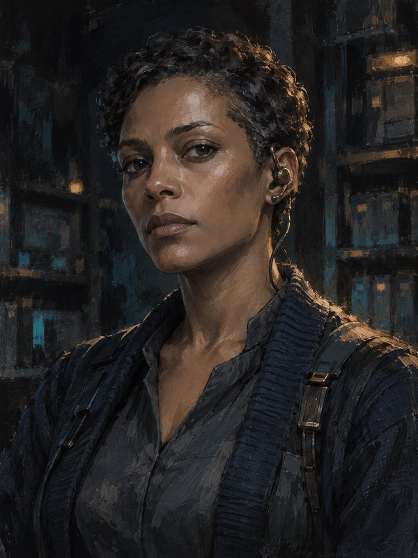
Dispatcher: An adult woman dispatcher in a dark blue utility cardigan with a copper wired earpiece; her neutral attention supplies no delivery, attendance or approval.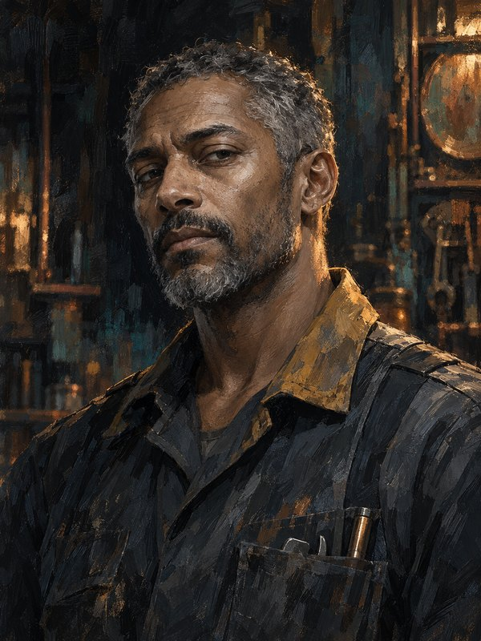
Mechanic: An adult male mechanic with graying hair, short beard and a worn work shirt; the portrait supplies no source verification or verdict.Masked attendant: An alert adult maintenance technician in charcoal coveralls, an industrial filter mask and an ordinary collar microphone; no raised weapon, clearance or encounter outcome.Pivotal dialogue performance and expressions
Exact authored words and established stock voices. Expressions grant no outcome or permission.
Mara: Recorded admission and remorse; no present-day forgiveness or new permission.Nia Pell: Calm testimony and contact terms; no rescue, gratitude or recording permission supplied by the picture.Ren: Practical concern about her father and the ramp; no completed repair or relocation.Sera: Patient attention before or after the final response; no forgiveness, completed inquiry or claimed writing action.Mara
I signed the coolant dump. Ward Nine. Three hundred on the night shift. I want that sentence to stay in my mouth.
Accountability, not absolution; a measured admission and a held beat before the scale of loss.
Mara
Helion told me the dump was a flush, not a kill. I signed because the night shift was already in the building and I thought the tower would move them. They did not move them.
Careful recollection; let the final plain sentence contradict her rationalization.
Nia Pell
You promised a witness. I promised nothing to a transmitter. I need care, a room they don't own, and a say in which words leave it. Can you do those separately?
Firm personal agency; distinguish her terms and let the last question remain a question.
Sister Lumen
You may leave a private message at the desk. I decide whether to answer. That's all the permission I'm giving.
Calm, definite boundary; the final permission limit is deliberate, never conciliatory.
Sera
The wall has room for a voice. It has never had room for an excuse.
Patient gravity at the wall; separate invitation from the refusal of excuses.
Mara
I could have waited for the exit count. Waiting would have put my name on the delay. I told myself a crew assignment was enough.
Own the unchosen delay, then expose the rationalization without defensiveness.
Mara
That is mine. I signed it. Don't make the tower's next decision erase the one I made.
A plain admission, then a firmer refusal to erase it.
Sister Lumen
You sold the week after walking with me. Helping with this reply doesn't make that disappear. Leave future messages at the desk; don't speak as my partner.
Betrayal stays explicit; measured limits rather than anger or forgiveness.
Sister Lumen
You promised to break the hour and sold it instead. This envelope is a different act. Future messages stay at the desk; don't call me your partner.
Keep the broken promise beside this separate act; deliberate contact boundary.
Nia Pell
This one answer doesn't reopen contact. Leave the pause in place.
One bounded answer; clear contact limit with no implied gratitude.
Ren
We can walk. My father needs the ramp, not the stairs.
Practical concern for her father; steady, clear emphasis on the ramp.
Sera
She agreed to record it. That wasn't permission for every public use.
Separate recording from public permission, attentive rather than accusatory.
Sera
You agreed to pause questions. A hearing isn't an exception.
Keep the agreed pause intact; retain the previously slower word-clarity pass.
Sera
One at a time,
A quiet patient invitation; no theatrical closure.
Kerr, Edda, Quill and Asa — campaign performance
Sixteen exact-word stock performances, delivered loudness matching, and explicit scene/state art. Edda’s two papers require an earned paid assignment; her inquiry remains open.
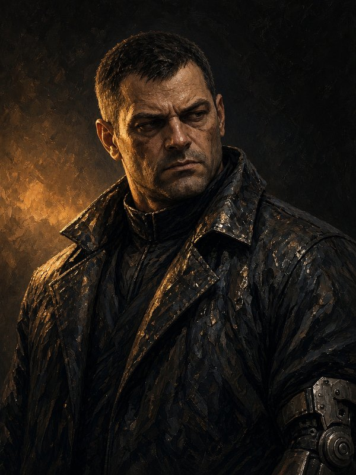
Kerr: Practical, reserved attention to case and private terms; earned breach expression still takes precedence. No recovery or forgiveness.Quill: Direct commercial terms and bookkeeping; the earlier refusal retains its waiting expression. No cleared relationship or waived debt.Edda: Only an earned paid bench assignment permits Edda holding its notice beside the inquiry reference. Archive suspension and inquiry remain; no acquittal.Canal freight gate · Asa sets the terms. Closer character-led dispatch briefing before acceptance or crossing. The intact sealed case supplies no delivery, clearance or treatment outcome.Kerr
They have my replacement at the canal depot. Unpowered, no miracle in it.
A practical request; separate replacement equipment from any miracle. · -20.0 LUFS
Kerr
Tell the wall you left it open. I don't need a finished job invented on the way down.
An unfinished errand stays unfinished; deliberate honesty, without accusation. · -19.99 LUFS
Kerr
You sorted somebody else's shelves for this. That's your time, not a favor I signed for.
Recognize the runner’s spent time while refusing an invented debt. · -20.0 LUFS
Kerr
My case. Your terms with the depot. Keep both names on the right paper.
Check custody and terms separately; plain, reserved acknowledgement. · -20.01 LUFS
Edda
This tells us where to look. It isn't the record. My countersignature isn't the command's issuing key either.
Source precision; distinguish a lead, a record and the issuing key. · -20.01 LUFS
Edda
They can find my shift from this. Taking my name off the public copy won't hide it from my employer.
A measured warning about her employer’s trace; no public anonymity claim. · -20.0 LUFS
Edda
One shift. Keep both papers. Don't make the first one an acquittal.
Limited earned work, ongoing inquiry; restrained relief and a firm boundary. · -19.99 LUFS
Edda
They accepted the request. They haven't closed the key. Will you sit while I ask payroll?
Acknowledge a submitted request, then the missing closure; end with a personal invitation. · -20.0 LUFS
Quill
Paid now. Late then. Both fit on the page.
Bookkeeping with a long memory; payment and lateness occupy separate beats. · -19.98 LUFS
Quill
You paid what you had postponed. That settles the forty, not the rest of your night.
Acknowledge late payment precisely, without selling absolution. · -20.0 LUFS
Quill
An introduction asks somebody else to believe my word about yours. Clear the forty first, or use the map without me.
Explain the social cost of an introduction; keep the refusal direct. · -20.02 LUFS
Quill
Someone who pays for an original. You want Mara's reasons, ask Mara. I sell the route to the room, not an honest answer.
A practiced seller’s evasive answer; separate ownership from answers. · -20.01 LUFS
Asa
Diagnostic cartridge. Clinic stock. My manifest can't cross this gate.
Practical dispatch identification; the manifest limit remains real. · -20.02 LUFS
Asa
You left it at intake. I brought the batch reference; we can ask before calling it delivered.
Separate intake, a reference and actual delivery; invite verification. · -20.06 LUFS
Asa
I haven't seen a stock receipt for your case. That part is still open.
Keep an unseen receipt honestly open; patient rather than consoling. · -20.0 LUFS
Asa
What were you trying to carry for yourself?
A personal question with room to answer; keep the runner’s identity private. · -20.51 LUFS
Campaign voice balance and Ives
All 290 active deliveries use measured constant-gain playback trims targeting −23.5 LUFS, before your separate voice slider. This audition plays the delivery file; game playback applies the recorded trim. Thirteen exact-word stock Ives deliveries retain am_eric. Source challenges remain unresolved until the player answers.
An unresolved institutional offer, with no accepted payment, received source or earned closure.Professional scrutiny of an allegation or public source, before the player answers. No authentication, filed account or witness-source handover.Closer conversation before the player answers. The folio remains closed; no authenticated issuing key, filed account, private address or transferred witness ledger.Ives
We kept the name. Burning the badge was a hobby.
A cool reminder that the tower retains a name, with dry precision rather than relish.
Ives
If you allege an instruction, identify its issuer. We will challenge anything less.
Challenge an allegation without implying the record has been authenticated.
Ives
A maintenance signature isn't an issuing key. A witness isn't a server. What exactly are you asking people to believe?
Three distinct source questions; precise scrutiny, with space for the player to answer.
Ives
Your name is still on file. That is what the tower will keep.
The tower retains the name; restrained institutional closure, not an acquittal or private-source transfer.
Ives
The folio is closed,
A clipped statement of institutional closure, not personal resolution.
Ives
Helion can pay forty for a week of quiet,
An offer still unanswered; forty buys quiet rather than a cleared name.
Ives
Or you can try to close this in the street, where we are already writing.
Quietly state the alternative and ongoing surveillance; no shouting or theatrical threat.
Ives
There are two fires,
Introduce the two copies with deliberate matter-of-fact attention.
Ives
We bought one. We would like the other to stop being a rumor.
Distinguish the bought copy from the uncontained rumor; no implied surrender.
Ives
You sold us a damaged hour,
State the damaged purchase plainly, without blaming the player for missing evidence.
Ives
We would like the name of whoever fried the rest.
A measured request for a name; no suggested answer or confirmed culprit.
Ives
The hour reached us,
Acknowledge the delivered hour only; avoid implying custody of any additional source.
Ives
Helion likes a complete file. You are the incomplete part.
The incomplete file remains pressure on the runner; restrained, exact final sentence.
Action-specific scene sounds
Original procedural contacts and short motors. Fragment inspection, committed reader queries, intact-seal inspection and the already-running hearing recorder. No outcome or permission is supplied by sound. Game playback uses the Effects slider and ducks these cues during dialogue.
foley-viewer
Viewer contact, muted glass resonance and short lens-motor texture on a newly inspected fragment. No authentication or memory verdict.
foley-reader
Dry reader contacts and a brief low transport motor on a committed index/key query, identical across success and failure. No success melody or authentication claim.
foley-case
Soft closed-case shell and strap contact during inspection of the intact seal. No opening latch, broken seal, handover or receipt.
foley-recorder
A restrained running-recorder transport and light table contact on entering the hearing. No new public quotation permission, filed account or verdict.
Runner’s field guide
Written spoiler-safe city/rules guide at /guide, with the existing opening-city painting and unchanged Under the Awning theme. No new voice, narrator, artwork delivery or campaign outcome. Autoplay waits for a running native context and respects saved mute, Stop and pagehide.
Existing opening art reused; original provenance and delivery unchanged.Full-cast portrait review
All fifteen established identities have neutral character cards; eight new expression variants fill the supporting-cast gaps. Actual actor and scene determine expression; existing earned boundaries take precedence. Dialogue and audio are unchanged.
Asa · The courierQuill · The brokerMara Voss · The patient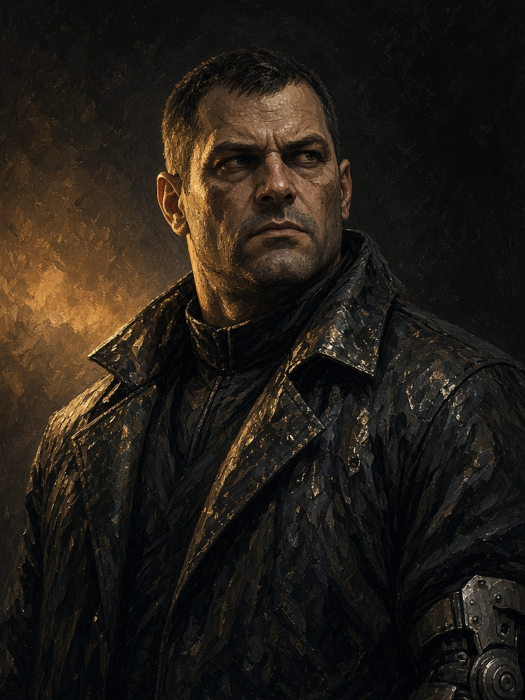
Kerr · Her shadowSister Lumen · The nurse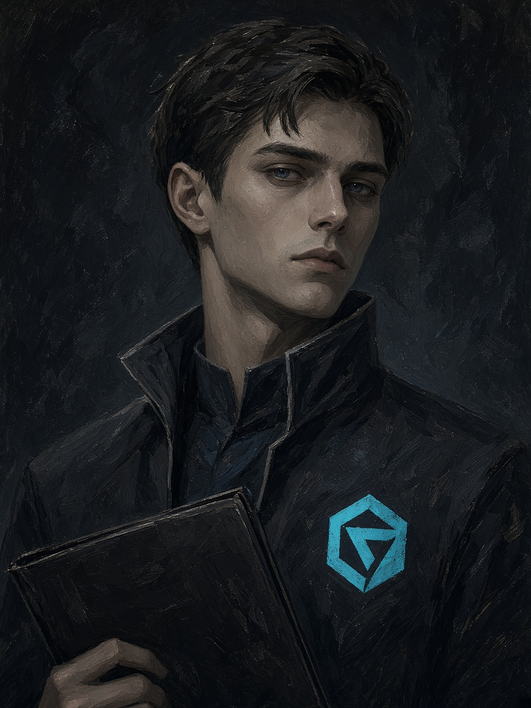
Ives · The folioSera · The wallEdda · The archive technicianNia Pell · The living witnessRen · The shelter contactOrderly · The Chapel attendantStallholder · The noodle sellerDispatcher · The dispatch contactMechanic · The records contactMasked attendant · The hatch attendant New expression variants
Asa · Practical attention to terms and cold storage; no observed delivery or patient outcome.Edda · Archive scrutiny before a resolved issuing key; no payroll assignment or cleared inquiry.Ren · Ren's attributed present conversation; attentive listening supplies no shelter repair or safety claim.Orderly · Practiced courtesy during actual attendant dialogue; no accepted appointment or unobserved cuff mark.Stallholder · Sober conversation about memory work; no acceptance of Quill's job or second person depicted.Dispatcher · Considering the actual proposal without depicting agreement, money, receipt or dispatch.Mechanic · Explaining the limits of the record; no repaired evidence or authenticated issuer.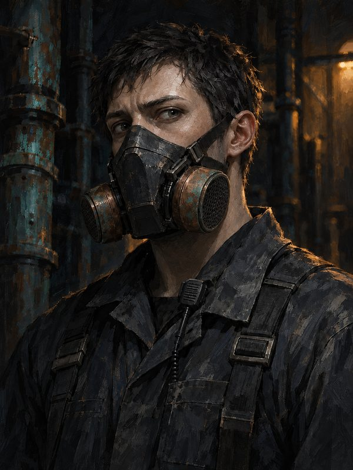
Masked attendant · Alert eyes keep the established respirator and identity, without adding a weapon or outcome. Archive and hearing direction
Two closer character illustrations, four exact-word stock synthetic revisions and three original physical textures. Sources stay anonymous; draft art establishes no filing or verdict. Previous voice copies remain locked beside current reviewed deliveries.
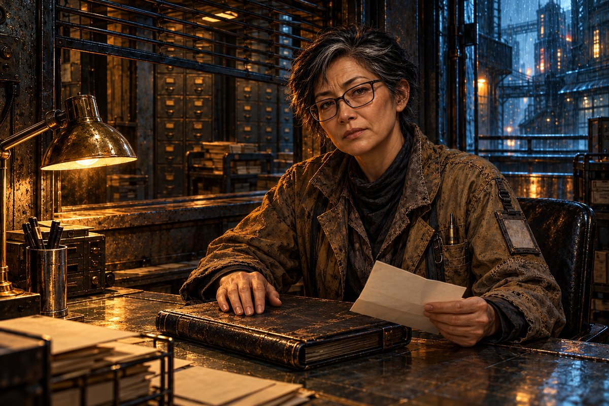
edda-archivesera-hearingEdda
Keep the original with Sera,
Previous performance
Nia Pell
That part stays,
Previous performance
Nia Pell
The address doesn't. If they ask where I am, tell them I am available through you.
Previous performance
Edda
They can find my shift from this. Taking my name off the public copy won't hide it from my employer.
Previous performance
foley-paper
Paper handling on committed archive custody or either filing/withdrawal decision. Same neutral sound for both; no authentication, permission or outcome melody.
foley-chair
Brake/lever handling after the actual chair preparation check is committed. Identical contact on hit/miss, never an assurance of a safe crossing.
foley-folio
Soft folio cover contact only when Ives actually takes the memorial page. No private-source transfer or inquiry verdict.
Restored multiline speeches
Four exact-word offline synthetic parts restore Quill’s Chapel explanation and Lumen’s offer. Established stock voices and existing scene art; original dialogue remains unchanged.
Sister Lumen
Mara Voss signed the coolant dump into Ward Nine. Three hundred people. One memo. No funeral that used their names. The shard is the only unedited hour.
Sister Lumen
Sell it to Quill and he sells it to Helion, and Helion buys the last copy of its own crime. Break it, and I leak what I remember. Memory is weaker than a shard. It is still a fire.
Quill
Clients call it absolution. The machine reads the hour, files the raw memory, then burns the feeling out and leaves the facts standing there like furniture. The raw file sits in the plinth under the chair.
Quill
That file is the product. Saints keep it. Then they sell it back to the same towers that sent them the clients. Mara's hour is worth more to Helion than Mara is.
Speech progress and orderly clarity
Same established stock voice and exact words. A short pause separates the adjacent sibilants. Unprompted transcription is a technical proxy, not independent listening acceptance.
Orderly
Pass still scans,
Previous performance
Wide space and investigation detail
Glass Chapel · the incinerator vein · Wide establishing composition emphasizes the square hatch above the incinerator flue before entry. No open hatch, crossing, tech encounter, weapon or safe exit is depicted.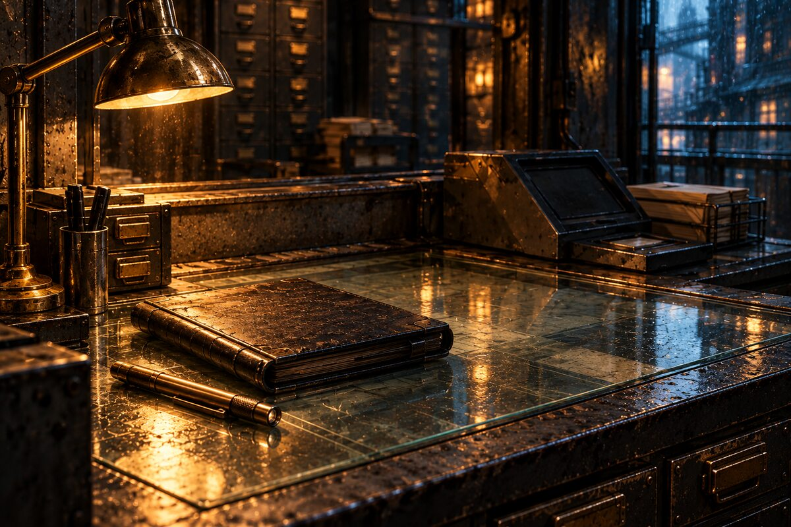
Helion · before the search · Close detail composition emphasizes preparing the reader and route before retrieval. The folio and drawers stay closed; nothing authenticates an issuing key, exposes a source, grants publication consent or claims a completed search.The Week · the street waits
Neutral chapter setting at the start of a week: no sale, witness, resolved work, authenticated record or successful outcome is depicted. Run-specific chapter prose remains authoritative.The Wall · weather and memory
Neutral memorial texture before the runner approaches: no readable names, public testimony, permission, witness location or completed inscription. It fits every chapter entry route.Glass Chapel · caught at the hatch
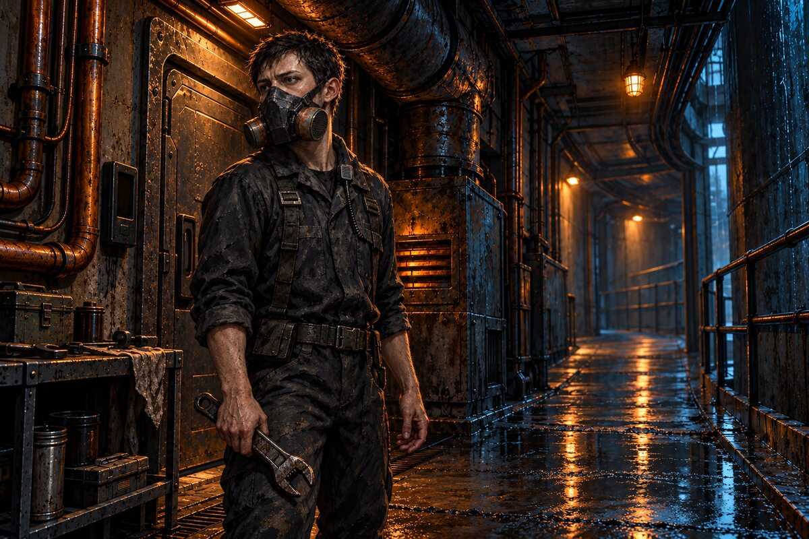
Literal confrontation after the hatch approach is noticed. The established masked attendant has an ordinary wrench and collar mic, with no transmitted alert indicator, injury, victory or escape. Same actor and exact existing speech; no new dialogue.Canal depot · the case stays held
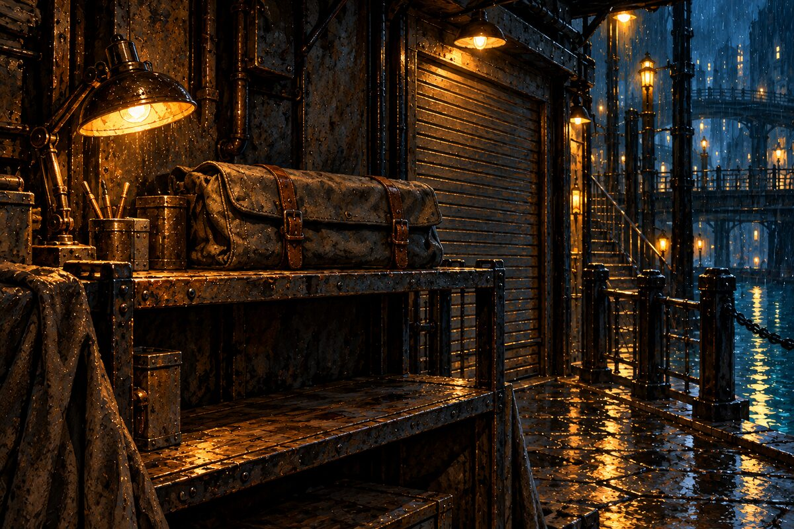
Failed collection aftermath: the closed case remains on its shelf, before any registered courier or handover. No recipient, register, delivery receipt, privacy guarantee, medical treatment or completed promise is depicted; both trace states retain their own prose.Equipment and earned moments · 18 October 2026
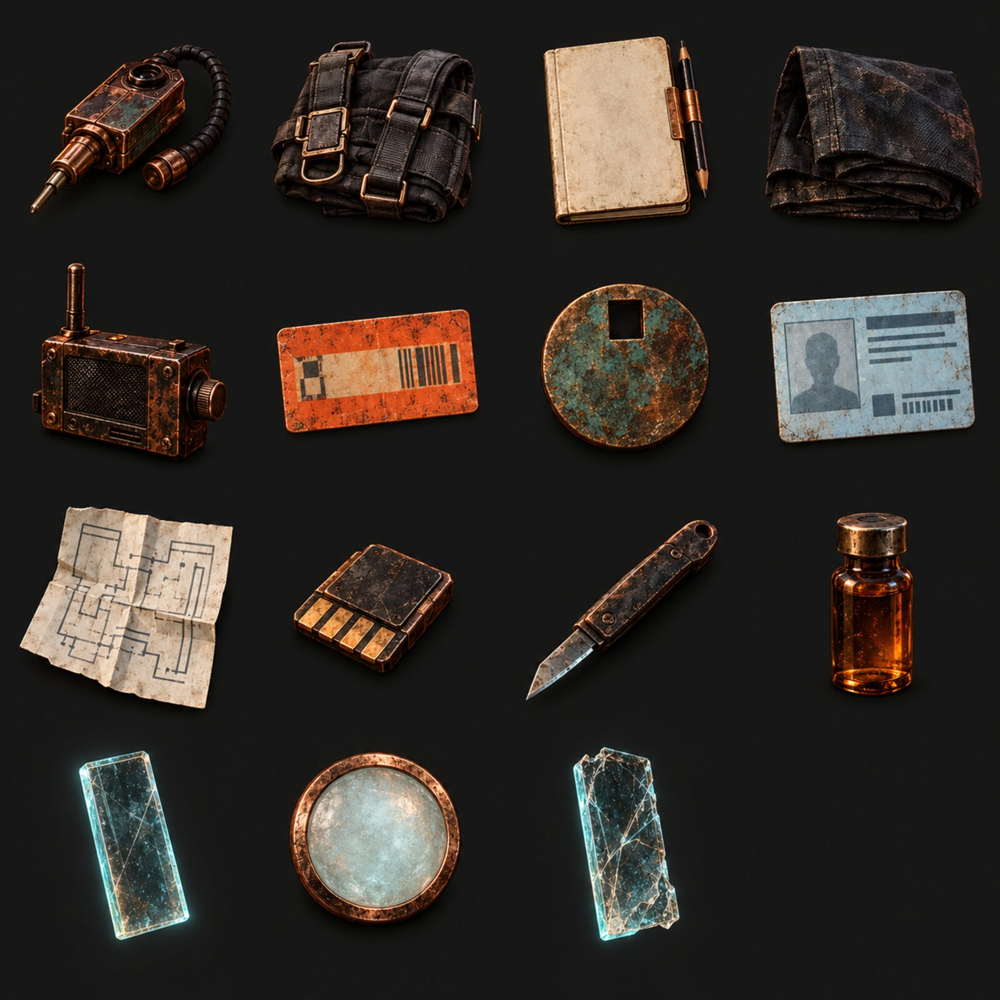
Fourteen known inventory objects and a damaged-shard variant, illustrated without readable identities or new mechanical claims; a 4 by 4 CSS viewport displays only the owned item.Only after choosing to stay: Mara turns her chipped cup. No dispatch receipt, treatment, public permission or absolution is depicted.Only agreed custody at the Ward Nine return: the closed original and circulating copy remain separate. No authentication, readable identity or resolved employer risk is depicted.Kite City · runner’s schematic
Neutral schematic texture with anonymous blocks and channels, no labeled future landmarks, selected route or geographic claim. Live labels reveal only places introduced by the current scene, recorded progress or existing legal choices.Landmarks, object studies and shared scenes
Individual undamaged memory sliver on dark felt; a second generated edit removed scratch-like branching lines so the intact and ash states read distinctly.Individual chipped and cracked shard, for owned shard inspection only when ash is true.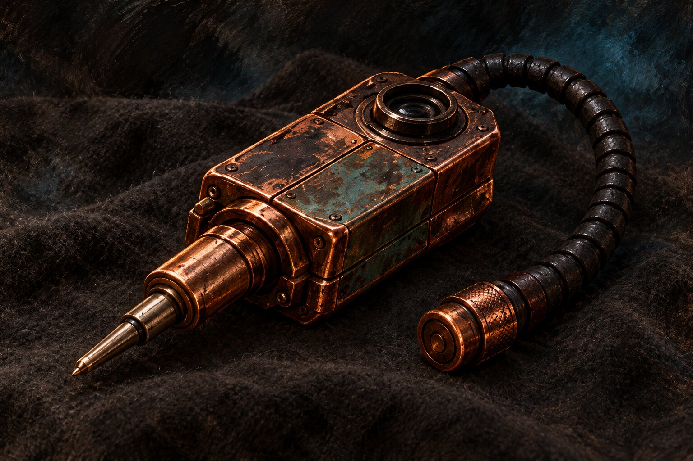
Individual worn copper contact scanner with coiled cable on charcoal felt; no result or authentication claim.Individual verdigris brass room token with square opening, no identities, room address or transfer outcome.Mara beneath the halo and Lumen beside the controls; magenta optic and original identities retained. Only an authored pact placing Lumen there permits this unresolved pre-choice painting.Sera with pencil and Ives with an open folio at the memorial stair, only when on_file and act2_deal put both in arrival prose. No page handover, ending, verdict or private identities.Complete equipment inspections and literal conversations
One single object study, large and crisply detailed, centered on charcoal felt. Entire object visible with margin, no cropping, no hands or additional items. Preserve the supplied atlas object's materials, proportions and distinctive silhouette. Folded padded black support straps with worn brass buckles; match top row second object.One single object study, large and crisply detailed, centered on charcoal felt. Entire object visible with margin, no cropping, no hands or additional items. Preserve the supplied atlas object's materials, proportions and distinctive silhouette. A small closed cream procedural booklet with clipped ordinary pencil; match top row third object. No readable writing.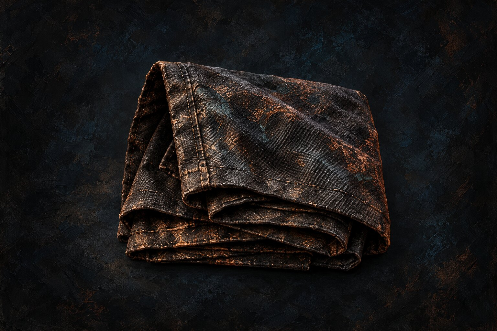
One single object study, large and crisply detailed, centered on charcoal felt. Entire object visible with margin, no cropping, no hands or additional items. Preserve the supplied atlas object's materials, proportions and distinctive silhouette. Folded charcoal shielding fabric with worn stitched edges; match top row fourth object.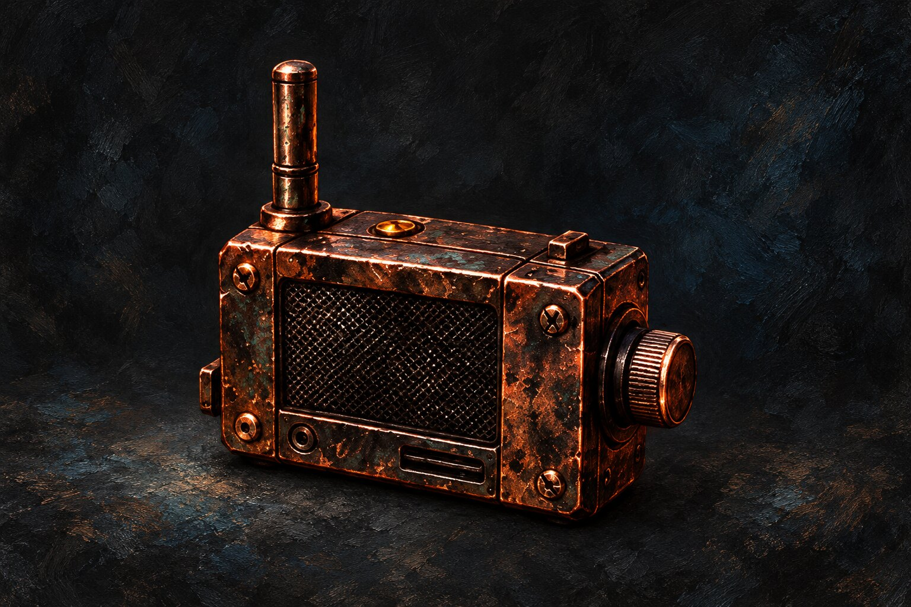
One single object study, large and crisply detailed, centered on charcoal felt. Entire object visible with margin, no cropping, no hands or additional items. Preserve the supplied atlas object's materials, proportions and distinctive silhouette. A shielded worn copper receiver with a short antenna; match second row first object. No screen result or readable labels.One single object study, large and crisply detailed, centered on charcoal felt. Entire object visible with margin, no cropping, no hands or additional items. Preserve the supplied atlas object's materials, proportions and distinctive silhouette. A single orange disposable freight-clearance card with abstract black bars; match second row second object. No legible numbers, letters, readable routing or names.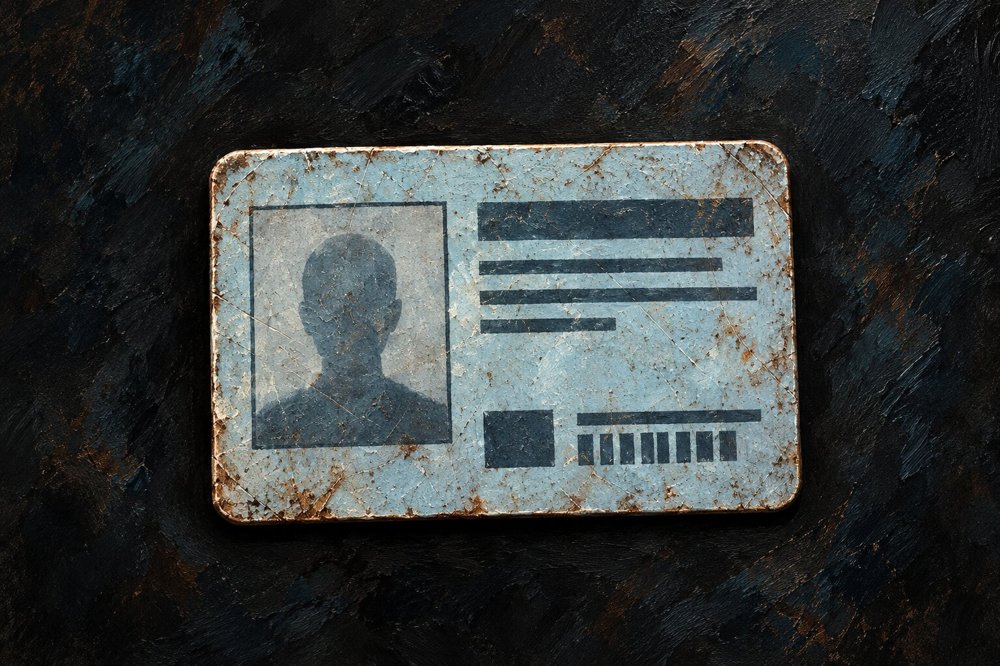
One single object study, large and crisply detailed, centered on charcoal felt. Entire object visible with margin, no cropping, no hands or additional items. Preserve the supplied atlas object's materials, proportions and distinctive silhouette. A pale blue appointment card with anonymous printed silhouette and indistinct fields; match second row fourth object. No legible identity, numbers, letters, photographs of identifiable people or official insignia.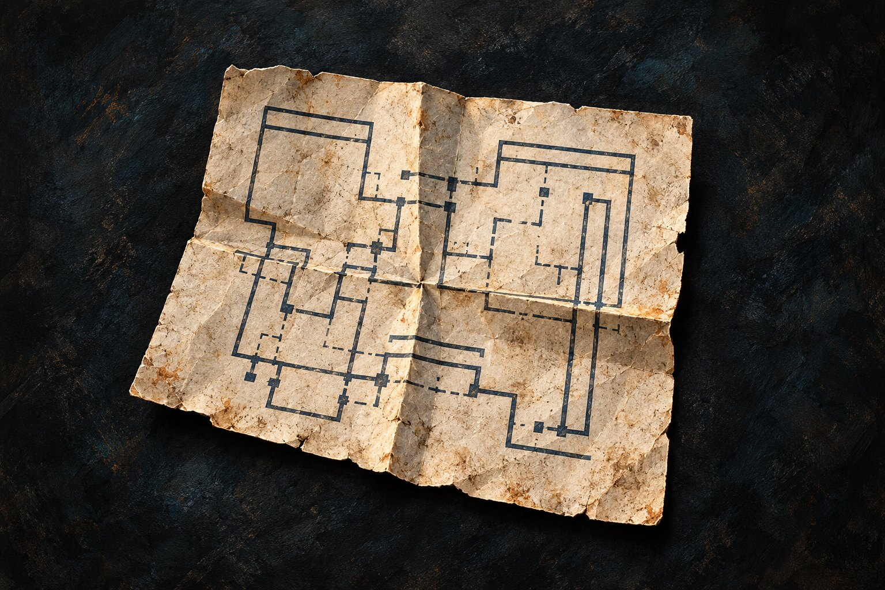
One single object study, large and crisply detailed, centered on charcoal felt. Entire object visible with margin, no cropping, no hands or additional items. Preserve the supplied atlas object's materials, proportions and distinctive silhouette. One folded aged thermal-paper service diagram with abstract fine lines, no readable labels or precise private address; match third row first object.One single object study, large and crisply detailed, centered on charcoal felt. Entire object visible with margin, no cropping, no hands or additional items. Preserve the supplied atlas object's materials, proportions and distinctive silhouette. A small dark ceramic chip with four exposed aged copper contacts; match third row second object. No new lights or readable text.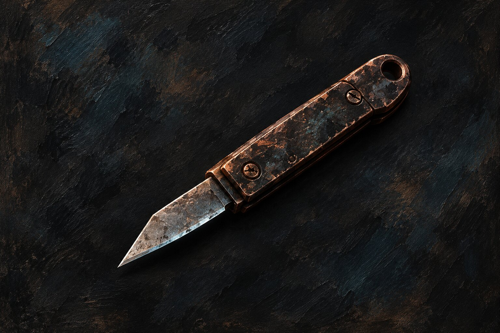
One single object study, large and crisply detailed, centered on charcoal felt. Entire object visible with margin, no cropping, no hands or additional items. Preserve the supplied atlas object's materials, proportions and distinctive silhouette. A small worn utility knife with a narrow exposed metal blade and dark aged copper handle; match third row third object. No blood, violence, hands or readable stamp.One single object study, large and crisply detailed, centered on charcoal felt. Entire object visible with margin, no cropping, no hands or additional items. Preserve the supplied atlas object's materials, proportions and distinctive silhouette. A single sealed amber medicine vial with worn brass cap and no readable label; match third row fourth object. No syringe, dosage, hands or treatment.One single object study, large and crisply detailed, centered on charcoal felt. Entire object visible with margin, no cropping, no hands or additional items. Preserve the supplied atlas object's materials, proportions and distinctive silhouette. A pale frosted-glass debt token in a copper rim; match bottom row second object. No legible engraving, identity, redemption indicator or outcome.![Exactly two established characters on Ward Four shelter stair: Sera from first portrait in worn teal hood, crouching to catch a bucket beneath a visibly leaking coolant valve; Ren from second portrait in worn ochre raincoat, setting an ordinary kettle on a DRY step beside a passable ramp. Preserve their faces, ages and identities. Match third reference venue. No repair collar, tools used successfully, allocated room, new bed, witness, eviction, agreement gesture or completed evacuation. Two concerned neighbors talking BEFORE the player agrees to help. Clear readable faces and silhouettes, full heads and hands in frame. Rain-blue and copper lamps, human-scale architecture.](../../public/art/shelter-conversation.jpg) Exactly two established characters on Ward Four shelter stair: Sera from first portrait in worn teal hood, crouching to catch a bucket beneath a visibly leaking coolant valve; Ren from second portrait in worn ochre raincoat, setting an ordinary kettle on a DRY step beside a passable ramp. Preserve their faces, ages and identities. Match third reference venue. No repair collar, tools used successfully, allocated room, new bed, witness, eviction, agreement gesture or completed evacuation. Two concerned neighbors talking BEFORE the player agrees to help. Clear readable faces and silhouettes, full heads and hands in frame. Rain-blue and copper lamps, human-scale architecture.
Exactly two established characters on Ward Four shelter stair: Sera from first portrait in worn teal hood, crouching to catch a bucket beneath a visibly leaking coolant valve; Ren from second portrait in worn ochre raincoat, setting an ordinary kettle on a DRY step beside a passable ramp. Preserve their faces, ages and identities. Match third reference venue. No repair collar, tools used successfully, allocated room, new bed, witness, eviction, agreement gesture or completed evacuation. Two concerned neighbors talking BEFORE the player agrees to help. Clear readable faces and silhouettes, full heads and hands in frame. Rain-blue and copper lamps, human-scale architecture.![Edda from first reference, same middle-aged face, short salt-and-pepper hair, rectangular glasses, worn brown technical coat, stands at the Helion service counter from second reference. She keeps her thumb over the corner of a billing slip, hiding the current account number. A second ordinary service card and a small closed brown paper receiver sleeve lie SEPARATELY on the counter. These are the three objects for review, not new discovered evidence. No receiver removed from sleeve, no handover, terminal query, seal, approved receipt, readable marks, authenticated key or completed closure. Her hands stay natural. Serious attentive expression. Landscape detail composition, face and three separate paper objects all readable in silhouette, no legible writing.](../../public/art/edda-service-review.jpg) Edda from first reference, same middle-aged face, short salt-and-pepper hair, rectangular glasses, worn brown technical coat, stands at the Helion service counter from second reference. She keeps her thumb over the corner of a billing slip, hiding the current account number. A second ordinary service card and a small closed brown paper receiver sleeve lie SEPARATELY on the counter. These are the three objects for review, not new discovered evidence. No receiver removed from sleeve, no handover, terminal query, seal, approved receipt, readable marks, authenticated key or completed closure. Her hands stay natural. Serious attentive expression. Landscape detail composition, face and three separate paper objects all readable in silhouette, no legible writing.
Edda from first reference, same middle-aged face, short salt-and-pepper hair, rectangular glasses, worn brown technical coat, stands at the Helion service counter from second reference. She keeps her thumb over the corner of a billing slip, hiding the current account number. A second ordinary service card and a small closed brown paper receiver sleeve lie SEPARATELY on the counter. These are the three objects for review, not new discovered evidence. No receiver removed from sleeve, no handover, terminal query, seal, approved receipt, readable marks, authenticated key or completed closure. Her hands stay natural. Serious attentive expression. Landscape detail composition, face and three separate paper objects all readable in silhouette, no legible writing.![Sister Lumen from first portrait, same bald face, black coat and clerical collar, established MAGENTA cybernetic optic preserved. She is alone in the clinic side room from second reference, standing beside the ordinary table and spare chair turned toward the rain-streaked window. She lifts a small worn ceramic cup just above the table with one hand while wiping the ring underneath with a plain cloth in the other, a quiet routine gesture. Not smiling, not signing anything, no statement, envelope, recorder, machine, medical treatment or permission. Cup belongs to Mara but Mara is not pictured. Care without endorsement; intimate landscape composition, complete head and hands visible, copper lamp and muted rainy blue.](../../public/art/lumen-cup.jpg) Sister Lumen from first portrait, same bald face, black coat and clerical collar, established MAGENTA cybernetic optic preserved. She is alone in the clinic side room from second reference, standing beside the ordinary table and spare chair turned toward the rain-streaked window. She lifts a small worn ceramic cup just above the table with one hand while wiping the ring underneath with a plain cloth in the other, a quiet routine gesture. Not smiling, not signing anything, no statement, envelope, recorder, machine, medical treatment or permission. Cup belongs to Mara but Mara is not pictured. Care without endorsement; intimate landscape composition, complete head and hands visible, copper lamp and muted rainy blue.
Sister Lumen from first portrait, same bald face, black coat and clerical collar, established MAGENTA cybernetic optic preserved. She is alone in the clinic side room from second reference, standing beside the ordinary table and spare chair turned toward the rain-streaked window. She lifts a small worn ceramic cup just above the table with one hand while wiping the ring underneath with a plain cloth in the other, a quiet routine gesture. Not smiling, not signing anything, no statement, envelope, recorder, machine, medical treatment or permission. Cup belongs to Mara but Mara is not pictured. Care without endorsement; intimate landscape composition, complete head and hands visible, copper lamp and muted rainy blue.Edda anatomy correction · 18 October 2026
The preceding service-counter acceptance was incorrect. The current painting has two separate arms and two hands on the counter. Billing slip, service card and closed sleeve retain their original unresolved meaning. All three image sizes were replaced together; previous bytes are retained only in the offline anatomy-baseline folder.
1200 × 800 · cdeb87235434e44bb8bce9d51e2104cb000cd6c2b7cb0d08363eb0edd3bfe95a600 × 400 · 0e6fe98a1c570e1e9ec3e48923632799689b8583734b2ab113c46f35f9f52cef96 × 64 · 00d6393755e56e6f4bc8e202a128fec64f7313b1a73e40b544d64b1cf9700e7eVisual direction · display finish comparison
Display-only presentation; no generated painting, delivered image or voice file changed. The left portrait is the original delivery, the middle uses the in-game brightness(1.07) contrast(.95) adjustment, and the right is an existing scene painting for context. High-contrast mode and full artwork inspection retain original exposure. Identity, expression and eye hue are preserved; this does not claim independent artist acceptance.
Mara · Original portraitMara · Display finishMara · Existing scene contextSera · Original portraitSera · Display finish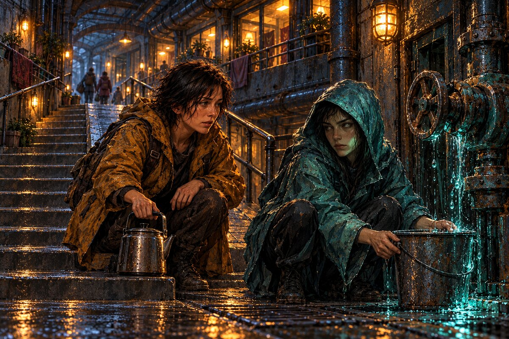
Sera · Existing scene contextLumen · Original portraitLumen · Display finishLumen · Existing scene contextQuill · Original portraitQuill · Display finishQuill · Existing scene context Approved title branding · 18 October 2026
Two generated masters, resized/encoded only. Transparent branding is shown over the audition’s dark background. Symbolic key art grants no equipment or outcome. Existing voices and music are unchanged. Provenance and new anatomy cohort: title-branding.json.
Standalone alpha wordmark, also checked at actual phone scale.Portrait title painting. One visible connected arm/hand, other arm concealed, two grounded legs; AI inspection only.Shared brand and dice foley · 18 October 2026
Original small SVG halo/shard geometry, static loading mark and silver/cyan menu feedback. Title wordmark and all scene paintings remain unchanged. Five original seeded procedural effects, offline only; Effects controls their level, speech ducks them, and cancellation prevents late starts.
Decelerating surface rattle
Soft success landing
Soft miss landing
Successful ten accent
Missed one accent
Origin delivery encodes · 20 October 2026
Same credited neutral settings, unchanged 1280 × 720 composition; WebP encoding only. Original JPEGs remain available. No actors or new events. See origin-deliveries.json.
Original stallOriginal spire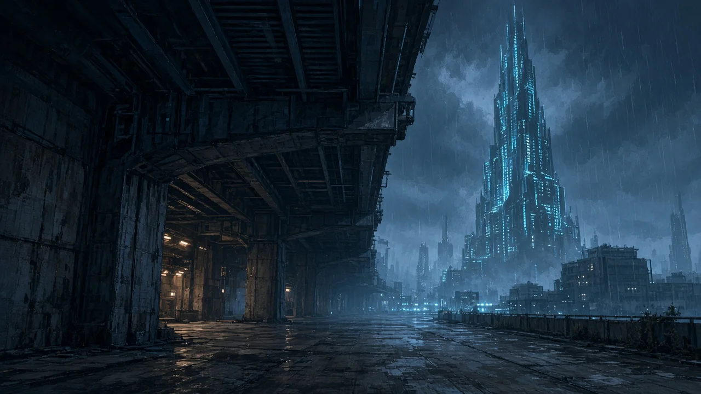
Original canal